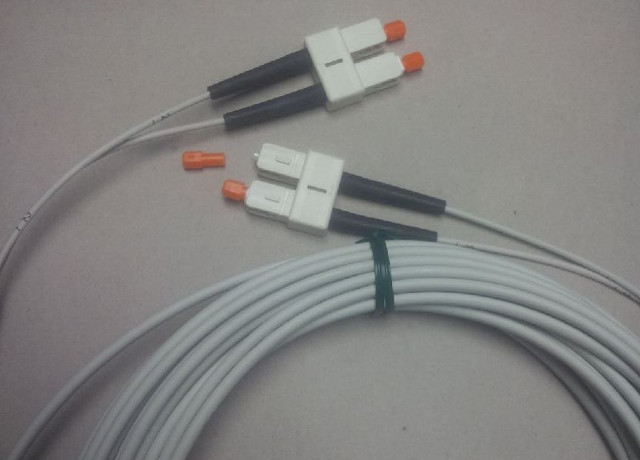
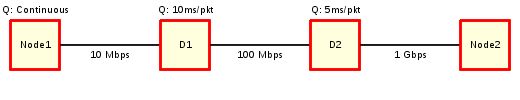

CS 3800 - Computer Networks
Table of Contents
- Day 1 - Mon, January 22, 2024
- Day 2 - Wed, January 24, 2024
- Day 3 - Mon, January 29, 2024
- Day 4 - Wed, January 31, 2024
- Day 5 - Mon, February 5, 2024
- Day 6 - Wed, February 7, 2024
- Day 7 - Mon, February 12, 2024
- Day 8 - Wed, February 14, 2024
- Day 9 - Mon, February 19, 2024
- Day 10 - Wed, February 21, 2024
- Day 11 - Mon, February 26, 2024
- Day 12 - Wed, February 28, 2024
- Day 13 - Mon, March 4, 2024
- Day 14 - Wed, March 6, 2024
- Day 15 - Mon, March 11, 2024
- Day 16 - Wed, March 13, 2024
- Day 17 - Mon, March 18, 2024
- Day 18 - Wed, March 20, 2024
- Day 19 - Mon, March 25, 2024
- Day 20 - Wed, March 27, 2024
- Day 21 - Mon, April 1, 2024
- Day 22 - Wed, April 3, 2024
- Day 23 - Mon, April 8, 2024
- Day 24 - Wed, April 10, 2024
- Day 24 Introduction
- Projects
- Layer 1 - Physical Connectivity Q3 F
- Bandwidth vs Throughput Q3 F
- Encoding Techniques Q3 F
- Non-Return to Zero (NRZ) Q3 F
- Non-Return to Zero Inverted (NRZI) Q3 F
- Manchester Encoding Q3 F
- 4B/5B Encoding Q3 F
- Encoding Example #1
- Encoding Example #2
- Handshake, RTT, Propagation, Transmit, and Queue Q3 F
- Latency Example #1
- Latency Example #2
- Latency Example #3
- Latency Example #3: Qs
- Latency Example #3: Ts
- Latency Example #3: Ps
- Latency Example #3: Final
- Day 24 Summary
- Day 25 - Mon, April 15, 2024
- Day 25 Introduction
- Shannon's Theorem Q3 F
- Shannon Example #1
- Shannon Example #2
- Shannon Example #3
- Framing: The Framing Problem Q3 F
- Framing: Byte Oriented Q3 F
- Framing: Byte Counting Q3 F
- Bit-Oriented: Sentinel Approach Q3 F
- Bit-Oriented: Clock-based Q3 F
- Switching and Forwarding: Switching Q3 F
- Datagram/Connectionless Approach Q3 F
- Forwarding Table Example #1
- Forwarding Table Example #2
- Source Routing Q3 F
- Day 25 Summary
- Day 26 - Wed, April 17, 2024 Canceled
- Day 27 - Mon, April 22, 2024
- Day 28 - Wed, April 24, 2024
- Day 28 Introduction
- Security Q3 F
- Security - The Three Pilars Q3 F
- Security - AAA Q3 F
- Encryption / Decryption Q3 F
- Symmetric Encryption Q3 F
- GnuPG Example Q3 F
- Asymmetric Encryption Q3 F
- Asymmetric Tools Q3 F
- Key Distribution Q3 F
- Hybrid Encryption Q3 F
- Security - Integrity Q3 F
- Integrity Hash Uses Q3 F
- Authentication and the Factors Q3 F
- Authentication and Storage Q3 F
- Passwords Q3 F
- Password Hashes Issue Q3 F
- Salted Password Hashes Q3 F
- Good Passwords Q3 F
- Homework #3 : GPG Email Exchange
- Public/Private Key Cryptography Introduction and Homework #3 Helper
- Day 28 Summary
- Day 29 - Mon, April 29, 2024
- Day 30 - Wed, May 1, 2024 Quiz
- Day 31 - Mon, May 6, 2024 Canceled
- Day 32 - Wed, May 8, 2024
- Day 33 - Mon, May 13, 2024 Final
- Excluded Material Extra
Day Direct: Jan 22, 24, 29, 31 — Feb 5, 7, 12, 14, 19, 21, 26, 28 — Mar 4, 6, 11, 13, 18, 20, 25, 27 — Apr 1, 3, 8, 10, 15, 17, 22, 24, 29 — May 1, 6, 8, 13
Disclaimer: This course plan is subject to change at the instructor's discretion. It is suggested you monitor the Last Updated date and time.
| Slide Last Updated: "2022-09-01 19:02:43" |
Day 1 - Mon, January 22, 2024
Day 1 Introduction
Zoom Meeting Info
https://cpp.zoom.us/j/83809088381
Meeting ID: 838 0908 8381
Passcode: SSH3800@4p
| Slide Last Updated: "2022-01-23 18:47:51" |
Day 1 Summary
Zoom Session Recording
[[]]
Zoom Session Chat
Below is the chat transcript (with names removed) and answers to questions inserted.
Legend:
- Student names have been removed and replaced with numbers.
- Private messages are filtered out, except…
- If the message contains a question everyone should know about, I remove the name and alter the question as necessary to protect privacy.
- Text color coding is just to help isolate student content.
- Grey backgrounded rows are my responses
- Rows with red-ish background for "Prof Gershman" are answers to class-related questions asked during the chat session.
| Slide Last Updated: "2022-01-23 18:48:12" |
Day 2 - Wed, January 24, 2024
Day 2 Introduction
Zoom Meeting Info
https://cpp.zoom.us/j/83809088381
Meeting ID: 838 0908 8381
Passcode: SSH3800@4p
| Slide Last Updated: "2022-01-23 18:47:51" |
Day 2 Summary
Zoom Session Recording
[[]]
Zoom Session Chat
Below is the chat transcript (with names removed) and answers to questions inserted.
Legend:
- Student names have been removed and replaced with numbers.
- Private messages are filtered out, except…
- If the message contains a question everyone should know about, I remove the name and alter the question as necessary to protect privacy.
- Text color coding is just to help isolate student content.
- Grey backgrounded rows are my responses
- Rows with red-ish background for "Prof Gershman" are answers to class-related questions asked during the chat session.
| Slide Last Updated: "2022-01-23 18:48:12" |
Day 3 - Mon, January 29, 2024
Day 3 Introduction
Zoom Meeting Info
https://cpp.zoom.us/j/83809088381
Meeting ID: 838 0908 8381
Passcode: SSH3800@4p
| Slide Last Updated: "2022-01-23 18:47:51" |
Day 3 Summary
Zoom Session Recording
[[]]
Zoom Session Chat
Below is the chat transcript (with names removed) and answers to questions inserted.
Legend:
- Student names have been removed and replaced with numbers.
- Private messages are filtered out, except…
- If the message contains a question everyone should know about, I remove the name and alter the question as necessary to protect privacy.
- Text color coding is just to help isolate student content.
- Grey backgrounded rows are my responses
- Rows with red-ish background for "Prof Gershman" are answers to class-related questions asked during the chat session.
| Slide Last Updated: "2022-01-23 18:48:12" |
Day 4 - Wed, January 31, 2024
Day 4 Introduction
Zoom Meeting Info
https://cpp.zoom.us/j/83809088381
Meeting ID: 838 0908 8381
Passcode: SSH3800@4p
| Slide Last Updated: "2022-01-23 18:47:51" |
Day 4 Summary
Zoom Session Recording
[[]]
Zoom Session Chat
Below is the chat transcript (with names removed) and answers to questions inserted.
Legend:
- Student names have been removed and replaced with numbers.
- Private messages are filtered out, except…
- If the message contains a question everyone should know about, I remove the name and alter the question as necessary to protect privacy.
- Text color coding is just to help isolate student content.
- Grey backgrounded rows are my responses
- Rows with red-ish background for "Prof Gershman" are answers to class-related questions asked during the chat session.
| Slide Last Updated: "2022-01-23 18:48:12" |
Day 5 - Mon, February 5, 2024
Day 5 Introduction
Zoom Meeting Info
https://cpp.zoom.us/j/83809088381
Meeting ID: 838 0908 8381
Passcode: SSH3800@4p
| Slide Last Updated: "2022-01-23 18:47:51" |
Day 5 Summary
Zoom Session Recording
[[]]
Zoom Session Chat
Below is the chat transcript (with names removed) and answers to questions inserted.
Legend:
- Student names have been removed and replaced with numbers.
- Private messages are filtered out, except…
- If the message contains a question everyone should know about, I remove the name and alter the question as necessary to protect privacy.
- Text color coding is just to help isolate student content.
- Grey backgrounded rows are my responses
- Rows with red-ish background for "Prof Gershman" are answers to class-related questions asked during the chat session.
| Slide Last Updated: "2022-01-23 18:48:12" |
Day 6 - Wed, February 7, 2024
Day 6 Introduction
Zoom Meeting Info
https://cpp.zoom.us/j/83809088381
Meeting ID: 838 0908 8381
Passcode: SSH3800@4p
| Slide Last Updated: "2022-01-23 18:47:51" |
Day 6 Summary
Zoom Session Recording
[[]]
Zoom Session Chat
Below is the chat transcript (with names removed) and answers to questions inserted.
Legend:
- Student names have been removed and replaced with numbers.
- Private messages are filtered out, except…
- If the message contains a question everyone should know about, I remove the name and alter the question as necessary to protect privacy.
- Text color coding is just to help isolate student content.
- Grey backgrounded rows are my responses
- Rows with red-ish background for "Prof Gershman" are answers to class-related questions asked during the chat session.
| Slide Last Updated: "2022-01-23 18:48:12" |
Day 7 - Mon, February 12, 2024
Day 7 Introduction
Zoom Meeting Info
https://cpp.zoom.us/j/83809088381
Meeting ID: 838 0908 8381
Passcode: SSH3800@4p
| Slide Last Updated: "2022-01-23 18:47:51" |
Day 7 Summary
Zoom Session Recording
[[]]
Zoom Session Chat
Below is the chat transcript (with names removed) and answers to questions inserted.
Legend:
- Student names have been removed and replaced with numbers.
- Private messages are filtered out, except…
- If the message contains a question everyone should know about, I remove the name and alter the question as necessary to protect privacy.
- Text color coding is just to help isolate student content.
- Grey backgrounded rows are my responses
- Rows with red-ish background for "Prof Gershman" are answers to class-related questions asked during the chat session.
| Slide Last Updated: "2022-01-23 18:48:12" |
Day 8 - Wed, February 14, 2024
Day 8 Introduction
Zoom Meeting Info
https://cpp.zoom.us/j/83809088381
Meeting ID: 838 0908 8381
Passcode: SSH3800@4p
| Slide Last Updated: "2022-01-23 18:47:51" |
Day 8 Summary
Zoom Session Recording
[[]]
Zoom Session Chat
Below is the chat transcript (with names removed) and answers to questions inserted.
Legend:
- Student names have been removed and replaced with numbers.
- Private messages are filtered out, except…
- If the message contains a question everyone should know about, I remove the name and alter the question as necessary to protect privacy.
- Text color coding is just to help isolate student content.
- Grey backgrounded rows are my responses
- Rows with red-ish background for "Prof Gershman" are answers to class-related questions asked during the chat session.
| Slide Last Updated: "2022-01-23 18:48:12" |
Day 9 - Mon, February 19, 2024
Day 9 Introduction
Zoom Meeting Info
https://cpp.zoom.us/j/83809088381
Meeting ID: 838 0908 8381
Passcode: SSH3800@4p
| Slide Last Updated: "2022-01-23 18:47:51" |
Day 9 Summary
Zoom Session Recording
[[]]
Zoom Session Chat
Below is the chat transcript (with names removed) and answers to questions inserted.
Legend:
- Student names have been removed and replaced with numbers.
- Private messages are filtered out, except…
- If the message contains a question everyone should know about, I remove the name and alter the question as necessary to protect privacy.
- Text color coding is just to help isolate student content.
- Grey backgrounded rows are my responses
- Rows with red-ish background for "Prof Gershman" are answers to class-related questions asked during the chat session.
| Slide Last Updated: "2022-01-23 18:48:12" |
Day 10 - Wed, February 21, 2024
Day 10 Introduction
Zoom Meeting Info
https://cpp.zoom.us/j/83809088381
Meeting ID: 838 0908 8381
Passcode: SSH3800@4p
| Slide Last Updated: "2022-01-23 18:47:51" |
Day 10 Summary
Zoom Session Recording
[[]]
Zoom Session Chat
Below is the chat transcript (with names removed) and answers to questions inserted.
Legend:
- Student names have been removed and replaced with numbers.
- Private messages are filtered out, except…
- If the message contains a question everyone should know about, I remove the name and alter the question as necessary to protect privacy.
- Text color coding is just to help isolate student content.
- Grey backgrounded rows are my responses
- Rows with red-ish background for "Prof Gershman" are answers to class-related questions asked during the chat session.
| Slide Last Updated: "2022-01-23 18:48:12" |
Day 11 - Mon, February 26, 2024
Day 11 Introduction
Zoom Meeting Info
https://cpp.zoom.us/j/83809088381
Meeting ID: 838 0908 8381
Passcode: SSH3800@4p
| Slide Last Updated: "2022-01-23 18:47:51" |
Day 11 Summary
Zoom Session Recording
[[]]
Zoom Session Chat
Below is the chat transcript (with names removed) and answers to questions inserted.
Legend:
- Student names have been removed and replaced with numbers.
- Private messages are filtered out, except…
- If the message contains a question everyone should know about, I remove the name and alter the question as necessary to protect privacy.
- Text color coding is just to help isolate student content.
- Grey backgrounded rows are my responses
- Rows with red-ish background for "Prof Gershman" are answers to class-related questions asked during the chat session.
| Slide Last Updated: "2022-01-23 18:48:12" |
Day 12 - Wed, February 28, 2024
Day 12 Introduction
Zoom Meeting Info
https://cpp.zoom.us/j/83809088381
Meeting ID: 838 0908 8381
Passcode: SSH3800@4p
| Slide Last Updated: "2022-01-23 18:47:51" |
Day 12 Summary
Zoom Session Recording
[[]]
Zoom Session Chat
Below is the chat transcript (with names removed) and answers to questions inserted.
Legend:
- Student names have been removed and replaced with numbers.
- Private messages are filtered out, except…
- If the message contains a question everyone should know about, I remove the name and alter the question as necessary to protect privacy.
- Text color coding is just to help isolate student content.
- Grey backgrounded rows are my responses
- Rows with red-ish background for "Prof Gershman" are answers to class-related questions asked during the chat session.
| Slide Last Updated: "2022-01-23 18:48:12" |
Day 13 - Mon, March 4, 2024
Day 13 Introduction
Zoom Meeting Info
https://cpp.zoom.us/j/83809088381
Meeting ID: 838 0908 8381
Passcode: SSH3800@4p
| Slide Last Updated: "2022-01-23 18:47:51" |
Day 13 Summary
Zoom Session Recording
[[]]
Zoom Session Chat
Below is the chat transcript (with names removed) and answers to questions inserted.
Legend:
- Student names have been removed and replaced with numbers.
- Private messages are filtered out, except…
- If the message contains a question everyone should know about, I remove the name and alter the question as necessary to protect privacy.
- Text color coding is just to help isolate student content.
- Grey backgrounded rows are my responses
- Rows with red-ish background for "Prof Gershman" are answers to class-related questions asked during the chat session.
| Slide Last Updated: "2022-01-23 18:48:12" |
Day 14 - Wed, March 6, 2024
Day 14 Introduction
Zoom Meeting Info
https://cpp.zoom.us/j/83809088381
Meeting ID: 838 0908 8381
Passcode: SSH3800@4p
| Slide Last Updated: "2022-01-23 18:47:51" |
Day 14 Summary
Zoom Session Recording
[[]]
Zoom Session Chat
Below is the chat transcript (with names removed) and answers to questions inserted.
Legend:
- Student names have been removed and replaced with numbers.
- Private messages are filtered out, except…
- If the message contains a question everyone should know about, I remove the name and alter the question as necessary to protect privacy.
- Text color coding is just to help isolate student content.
- Grey backgrounded rows are my responses
- Rows with red-ish background for "Prof Gershman" are answers to class-related questions asked during the chat session.
| Slide Last Updated: "2022-01-23 18:48:12" |
Day 15 - Mon, March 11, 2024
Day 15 Introduction
Zoom Meeting Info
https://cpp.zoom.us/j/83809088381
Meeting ID: 838 0908 8381
Passcode: SSH3800@4p
| Slide Last Updated: "2022-01-23 18:47:51" |
Day 15 Summary
Zoom Session Recording
[[]]
Zoom Session Chat
Below is the chat transcript (with names removed) and answers to questions inserted.
Legend:
- Student names have been removed and replaced with numbers.
- Private messages are filtered out, except…
- If the message contains a question everyone should know about, I remove the name and alter the question as necessary to protect privacy.
- Text color coding is just to help isolate student content.
- Grey backgrounded rows are my responses
- Rows with red-ish background for "Prof Gershman" are answers to class-related questions asked during the chat session.
| Slide Last Updated: "2022-01-23 18:48:12" |
Day 16 - Wed, March 13, 2024
Day 16 Introduction
Zoom Meeting Info
https://cpp.zoom.us/j/83809088381
Meeting ID: 838 0908 8381
Passcode: SSH3800@4p
| Slide Last Updated: "2022-01-23 18:47:51" |
Day 16 Summary
Zoom Session Recording
[[]]
Zoom Session Chat
Below is the chat transcript (with names removed) and answers to questions inserted.
Legend:
- Student names have been removed and replaced with numbers.
- Private messages are filtered out, except…
- If the message contains a question everyone should know about, I remove the name and alter the question as necessary to protect privacy.
- Text color coding is just to help isolate student content.
- Grey backgrounded rows are my responses
- Rows with red-ish background for "Prof Gershman" are answers to class-related questions asked during the chat session.
| Slide Last Updated: "2022-01-23 18:48:12" |
Day 17 - Mon, March 18, 2024
Day 17 Introduction
Zoom Meeting Info
https://cpp.zoom.us/j/83809088381
Meeting ID: 838 0908 8381
Passcode: SSH3800@4p
| Slide Last Updated: "2022-01-23 18:47:51" |
Day 17 Summary
Zoom Session Recording
[[]]
Zoom Session Chat
Below is the chat transcript (with names removed) and answers to questions inserted.
Legend:
- Student names have been removed and replaced with numbers.
- Private messages are filtered out, except…
- If the message contains a question everyone should know about, I remove the name and alter the question as necessary to protect privacy.
- Text color coding is just to help isolate student content.
- Grey backgrounded rows are my responses
- Rows with red-ish background for "Prof Gershman" are answers to class-related questions asked during the chat session.
| Slide Last Updated: "2022-01-23 18:48:12" |
Day 18 - Wed, March 20, 2024
Day 18 Introduction
Zoom Meeting Info
https://cpp.zoom.us/j/83809088381
Meeting ID: 838 0908 8381
Passcode: SSH3800@4p
| Slide Last Updated: "2022-01-23 18:47:51" |
Day 18 Summary
Zoom Session Recording
[[]]
Zoom Session Chat
Below is the chat transcript (with names removed) and answers to questions inserted.
Legend:
- Student names have been removed and replaced with numbers.
- Private messages are filtered out, except…
- If the message contains a question everyone should know about, I remove the name and alter the question as necessary to protect privacy.
- Text color coding is just to help isolate student content.
- Grey backgrounded rows are my responses
- Rows with red-ish background for "Prof Gershman" are answers to class-related questions asked during the chat session.
| Slide Last Updated: "2022-01-23 18:48:12" |
Day 19 - Mon, March 25, 2024
Day 19 Introduction
Zoom Meeting Info
https://cpp.zoom.us/j/83809088381
Meeting ID: 838 0908 8381
Passcode: SSH3800@4p
| Slide Last Updated: "2022-01-23 18:47:51" |
Day 19 Summary
Zoom Session Recording
[[]]
Zoom Session Chat
Below is the chat transcript (with names removed) and answers to questions inserted.
Legend:
- Student names have been removed and replaced with numbers.
- Private messages are filtered out, except…
- If the message contains a question everyone should know about, I remove the name and alter the question as necessary to protect privacy.
- Text color coding is just to help isolate student content.
- Grey backgrounded rows are my responses
- Rows with red-ish background for "Prof Gershman" are answers to class-related questions asked during the chat session.
| Slide Last Updated: "2022-01-23 18:48:12" |
Day 20 - Wed, March 27, 2024
Day 20 Introduction
Zoom Meeting Info
https://cpp.zoom.us/j/83809088381
Meeting ID: 838 0908 8381
Passcode: SSH3800@4p
| Slide Last Updated: "2022-01-23 18:47:51" |
Day 20 Summary
Zoom Session Recording
[[]]
Zoom Session Chat
Below is the chat transcript (with names removed) and answers to questions inserted.
Legend:
- Student names have been removed and replaced with numbers.
- Private messages are filtered out, except…
- If the message contains a question everyone should know about, I remove the name and alter the question as necessary to protect privacy.
- Text color coding is just to help isolate student content.
- Grey backgrounded rows are my responses
- Rows with red-ish background for "Prof Gershman" are answers to class-related questions asked during the chat session.
| Slide Last Updated: "2022-01-23 18:48:12" |
Day 21 - Mon, April 1, 2024
Day 21 Introduction
Zoom Meeting Info
https://cpp.zoom.us/j/83809088381
Meeting ID: 838 0908 8381
Passcode: SSH3800@4p
| Slide Last Updated: "2022-01-23 18:47:51" |
Day 21 Summary
Zoom Session Recording
[[]]
Zoom Session Chat
Below is the chat transcript (with names removed) and answers to questions inserted.
Legend:
- Student names have been removed and replaced with numbers.
- Private messages are filtered out, except…
- If the message contains a question everyone should know about, I remove the name and alter the question as necessary to protect privacy.
- Text color coding is just to help isolate student content.
- Grey backgrounded rows are my responses
- Rows with red-ish background for "Prof Gershman" are answers to class-related questions asked during the chat session.
| Slide Last Updated: "2022-01-23 18:48:12" |
Day 22 - Wed, April 3, 2024
Day 22 Introduction
Zoom Meeting Info
https://cpp.zoom.us/j/83809088381
Meeting ID: 838 0908 8381
Passcode: SSH3800@4p
| Slide Last Updated: "2022-01-23 18:47:51" |
Day 22 Summary
Zoom Session Recording
[[]]
Zoom Session Chat
Below is the chat transcript (with names removed) and answers to questions inserted.
Legend:
- Student names have been removed and replaced with numbers.
- Private messages are filtered out, except…
- If the message contains a question everyone should know about, I remove the name and alter the question as necessary to protect privacy.
- Text color coding is just to help isolate student content.
- Grey backgrounded rows are my responses
- Rows with red-ish background for "Prof Gershman" are answers to class-related questions asked during the chat session.
| Slide Last Updated: "2022-01-23 18:48:12" |
Day 23 - Mon, April 8, 2024
Day 23 Introduction
Zoom Meeting Info
https://cpp.zoom.us/j/83809088381
Meeting ID: 838 0908 8381
Passcode: SSH3800@4p
| Slide Last Updated: "2022-01-23 18:47:51" |
CS 3800.01 Spring 2024 Pseudo-Syllabus Syllabus
Instructor: David A. Gershman
| Office: | Remote via Zoom |
| Hours: | TTh 8:30 - 9:30pm via Zoom: 849 2619 1560 / 0ff!ceH0u$ |
| or by arrangment via Zoom | |
| Email: | dagershman@cpp.edu |
| Mastodon: | https://csed.social/@profgershman |
Dates:
| Holiday(s): | Tuesday, April 2, 2024 and Thursday, April 4, 2024 - Spring Break |
| Midterm #1 | n/a |
| Midterm #2 | n/a |
| Final: | Monday, May 13, 2024 @ 3:00pm - 4:50pm via Finals Schedule found here |
All email to me shall be sent to my CPP address (dagershman@cpp.edu). Likewise, any email originated by me to a student will be addressed to their CPP email address (bronconame@cpp.edu) - hopefully. However, it is not uncommon for students to have "personal" email accounts. If you initiate an email to me from your personal email address, I will usually just "reply" thus responding to the personal address. You are to ensure you monitor the appropriate email address for the correspondence. (Please do not use Canvas's Inbox as I (typically) do not monitor/check it.)
Lectures
Lectures will be presented via Zoom primarily synchronous. However there may be exceptions when class lecture is cancelled and/or replaced with a pre-recorded lecture. During Zoom lectures you do not have to have your camera on, and in fact, I discourage it to save bandwidth. Likewise, my camera will typically be turned off as well.
Zoom lectures will be recorded and the Zoom chat feature will also be utilized. Students are encouraged to ask questions either verbally or via the chat. The recorded lectures and the entire chat transcript, complete with answers to the questions asked in chat, will be provided in the Daily Summary slide of that day's notes within a few days after the lecture.
Exams (including Quizzes)
Prior to all exams, you will be provided a list of potential material for a particular exam (typically via tags within the notes). However, just because a topic is not explicitly listed as potential material, it may still be included as part of a question for a topic which is potential material (i.e. concepts build on previous concepts).
Exams will be administered via Canvas. You will have a predetermined amount of time to complete the exam. Each exam will be presented one question at a time. Once you advance to the next question you will not be able to return to previous questions. If your network connection is lost, you should be able to re-enter the exam to continue as long as there is still time left. The clock does not stop if you leave or lose network connectivity.
If you are unable to attend an exam, at least 2 days advanced notice must be given (possibly with proof of reason) and arrangements made with the instructor at least 1 day prior to said exam.
*/All exams (and quizzes) are closed book, closed notes, no Internet resources, and no collaboration with others unless other arrangments were made with the instructor./*
Course Content
I do not condone nor do I give consent for any of my class content (notes, exams, examples, videos, etc.) to be published or provided to any external destinations without prior written authorization from me. (Plus, they can technically be considered intellectual property of the University.)
Academic Integrity
Students are reminded of the university policy with regard to Academic Integrity and the Student Conduct Code.
Each student is responsible for understanding each assignment, program, or examination (APE), then completing and handing in their own work. Any explicitly allowed group activities will be clearly identified as such.
Any APE that is not the student's own work, violates the rules for said APE, or violates any additional rules provided with the APE will receive a score of 0 for their work, 0 for the APE, and/or a failing grade in the course depending on the severity and frequency of the offense(s). Additionally, instructors have a responsibililty to report such offenses to the Office of Student Conduct.
In short, cheating makes your grade and CS degree pointless. Enough students are doing it now to the point CPP's reputation is being adversely affected. Industry will look upon you (due to your degree) accordingly. Don't give them reason to doubt you!
Disclaimer
This syllabus may change at the discretion of the instructor but students will be notified by email as soon as possible, if not ahead of time.
Logistics
Who Am I?
My name is David Gershman. I work full-time as a Cybersecurity professional often on military programs for the Air Force, Navy, and Army and am currently part of a Navy effort and another with the FAA.
Due to CKD I work remotely which, in my opinion, gives you an advantage. I'm available MUCH more than other professors, answer emails quicker, am willing to have Zoom meetings at odd times if it helps you, and often provide additional content for topics not in the curriculum but students express interest in.
What to Call Me?
Professor Gershman, Mr. Gershman, or Gershman…whichever you're comfortable with and feel is respectful. (Please refrain from "Dr." as I unfortunately do not have a PhD.)
Needing to Miss a Class
If it's a normal lecture day, do not feel the need to let me know. If you do, I thank you but don't feel it necessary. However, for days with Quizzes or Exams, please refer to the Syllabus for guidance.
Course Notes
Course notes are available {TBD}.
Be aware, course notes are often updated so keep an eye on the "Last Updated" date/time. How to get updated notes is also currently {TBD}.
Notes Navigation
The notes utilize some Javascript for presentation-like navigation. Applicable Hot-Keys are:
| Key | Action |
|---|---|
| n | Next slide |
| p | Previous Slide |
| N | Next Day (must be on "Day" slide) |
| P | Previous Day (must be on "Day" slide) |
| i | Table of Contents (index of slides) |
| t | Top of Notes |
| e | End of Notes |
| b | Go (b)ack to where you were |
| C | List of tags |
Tags
Tags are a great way to see exactly what "slides" are relevant to exams and such. Using the capital 'C' hot-key, you'll get a list of tags shown alphabeticaly. Click on one and it will open a list of slides all marked with that tag.
For example, after hitting 'C', you'll see a tag called "Q1". Click on it and you'll see all the potential material covered for Quiz #1.
Click on "Midterm" and you'll see all slides (2) when our Midterms will be.
The following are the list of tags I'm intending to use:
| Tag | Meaning |
|---|---|
| Cancelled | Classes which were cancelled |
| F | Potential material for the final exam |
| Final | Day(s) of the final exam |
| Holiday | Holiday(s) with no class (if applicable) |
| M1 | Potential material for Midterm #1 |
| M2 | Potential material for Midterm #2 |
| Midterm | Day(s) of the Midterms |
| Qn | Potential material for Quiz #n |
| Quiz | Day(s) of the Quizzes |
| SpringBreak | Days of Spring Break (if applicable) |
Additional tags may be created as we go.
NOTE: These tags are also listed on the individual slides they pertain to. For example, the slide discussing ls has the tags "Q1 M1 M2 F" (as applicable for the term):
meaning the ls command is potential material for Quiz #1, Midterm #1, Midterm #2, and the Final.
Zoom Meeting IDs and Passcodes
Every class meeting should have the same Zoom meeting ID but may vary in passcode. This information can be found on the first slide - titled "Day XX Introduction" - of each day's slides within these notes. Please note, all Zoom meetings require you to log in using your Bronco credentials. i.e. only @cpp.edu users are allowed.
Exception: My office hours will be held using the Zoom information provided in the syllabus. Bronco credentials are still required for office hours.
Zoom Lecture Recordings
Recorded Zoom lectures and any other lecture recordings will be linked within the notes (usually on the 'Day XX Summary' slide). The videos themselves will reside within CPP's streaming video service.
Class lectures are recorded locally on my computer and require conversion (Zoom's fault, not mine). This conversion is done on an older (slower) computer and thus may take a few days to be posted (especially if editing is required). Class notes will be updated with the link when the video is available.
Zoom Audio
During our class sessions, I respectfully request you keep yourself muted unless you have a question or response. Remember we are all somewhere other than in a classroom and ambient noises can be distracting.
One exception to this request, is me (duh). So I apologize in advance for any ambient noises such as kids yelling, dogs barking, air conditioning blowing, garage door opening (I'm above ours), or the occasional kid-friendly profanity when I jam my knee into the desk.
Zoom Video
During our class sessions, I do not require you to have your video on in order to save bandwidth and reduce CPU usage. Likewise, for the same reasons I do not have video on either - only screen sharing.
If you would like video activated during an office hour visit, please let me know ahead of time so I can make accomodations.
Zoom Backgrounds
If you do choose to have your video on, whatever background you choose - virtual or not, please remember to ensure it is not offensive. Any background found to be offensive will result in the student's video being turned off. As I will be sharing my screen, any student who observes an offensive background may send me a private message within the Zoom chat so I can take action accordingly.
| Slide Last Updated: "2024-01-22 18:15:52" |
Day 23 Summary
Zoom Session Recording
Zoom Session Chat
Below is the chat transcript (with names removed) and answers to questions inserted.
Legend:
- Student names have been removed and replaced with numbers.
- Private messages are filtered out, except…
- If the message contains a question everyone should know about, I remove the name and alter the question as necessary to protect privacy.
- Text color coding is just to help isolate student content.
- Grey backgrounded rows are my responses
- Rows with red-ish background for "Prof Gershman" are answers to class-related questions asked during the chat session.
| 15:56:08 From Student00 | : | Good morning |
| 15:56:31 From Student00 | : | Is professor speaking? |
| 15:56:42 From Prof Gershman | : | Nope, waiting for 4pm. :) |
| 15:58:43 From Student00 | : | Okay got it |
| 16:00:03 From Student02 | : | Yes |
| 16:00:04 From Student00 | : | Yup |
| 16:09:14 From Student03 | : | Professor, will the final exam be online? |
| From Prof Gershman | : | If I'm the one giving/administrating the final, then yes it will be online via Canvas as well. |
| 16:09:43 From Student03 | : | understood, thank you |
| 16:09:51 From Student05 | : | We have a project due on the 13th, what will happen to that? |
| From Prof Gershman | : | For the most part, nothing. You will still need to have it turned in and presentations/demos will be done. We'll talk about that next class. |
| 16:09:54 From Student06 | : | we were supposed to have a project but the date for the demos was never given I don't think, do you know when the demos are? |
| From Prof Gershman | : | Same deal, will talk about it next class. |
| 16:26:37 From Student03 | : | you can look under canvas discussions, and read our replies |
| 16:27:17 From Student02 | : | you can also look at people, then groups, I think its organized there |
| 16:27:22 From Student02 | : | on canvas |
| 16:28:09 From Student07 | : | you are using the kurose ross textbook right |
| From Prof Gershman | : | No, I will continue solely from my own notes. |
| 16:28:19 From Student03 | : | can we go over how you will handle the grading going forward? Also if you plan on including Ibrahim content in future examinations |
| From Prof Gershman | : | I will honor Professor Ibrahim's grading weights and adjust accordingly. For example, you have 3 points left in Quizzes. For the quiz I have planned, whatever percentage you get, is the percent of 3 points you'll earn for the final 3 points of the Quiz section |
| 16:28:48 From Student08 | : | Will the grade weights still be the same |
| From Prof Gershman | : | Yes. |
| 16:31:29 From Student09 | : | He already graded our proposals |
| 16:32:49 From Student10 | : | Would the final be really 50-100 questions? |
| From Prof Gershman | : | If I administer it, yes. However, the questions are all 1pt questions graded automatically via Canvas (but feel free to talk to me if you see/find an error). |
| 16:33:50 From Student02 | : | Regarding the project, can you provide clarification on what is considered acceptable in terms of using provided references from Ibrahim for the project? Can we use the code from the references and build upon it or do we have to create entirely new code from the base? |
| From Prof Gershman | : | I'll respect Prof. Ibrahim's approach - you may use/augment what you find. |
| 16:34:39 From Student03 | : | to be fair, I recall Ibrahim being open to us using it |
| 16:34:46 From Student11 | : | @Henry Tran our group asked him in person and he said we can follow any references we find |
| 16:35:03 From Student09 | : | Our group talked with professor about this he said that we are okay to follow tutorials and use the references or anything else we find online^ |
| 16:35:03 From Student02 | : | Ah ok thanks! |
| 16:35:25 From Student12 | : | yeah he said he just wants us to understand the concept |
| 16:36:27 From Student07 | : | are the quizzes also one point questions? Ibrahim had each question correspond to one point so our quizzes only had 3 questions for a 3 point quiz |
| From Prof Gershman | : | Yes, but probably about 20 questions. I'll scale the 3 points left to the percentage earned of the 20pt quiz. (i.e. if you get 50% on the quiz, you'll get 1.5 of the 3 remaining points). |
| 16:37:17 From Student13 | : | all multiple choice |
| 16:37:44 From Student09 | : | Yeah our homework took longer/were longer than the quizzes |
| 16:39:22 From Student06 | : | thank you professor |
| 16:39:24 From Student14 | : | thanks professor |
| 16:39:28 From Student03 | : | thanks professor |
| 16:39:30 From Student02 | : | thank you professor |
| Slide Last Updated: "2022-01-23 18:48:12" |
Day 24 - Wed, April 10, 2024
Day 24 Introduction
Zoom Meeting Info
https://cpp.zoom.us/j/83809088381
Meeting ID: 838 0908 8381
Passcode: SSH3800@4p
| Slide Last Updated: "2022-01-23 18:47:51" |
Projects
Due Date/Time
The due date/time for projects will remain April 13 by 11:59pm.
Submissions
Professor Ibrahim required a PDF submission. So, we'll stick to that with the following modifications/exceptions:
- If you have separate products which can be turned into a PDF:
- Convert them to PDFs (e.g. images can be viewed in a browser and printed to PDF file)
- Combine PDF components into a single PDF.
- If you have several PDFs and need to combine them into a
single PDF, this can be done with various tools (i.e. PDFTK
{available in most Linux repos, Homebrew/MacPorts for
MacOS}).
- Worst case scenario, hit me up and I'll help combine the PDF pieces on my own system how you like them (I use pdftk on Linux).
- If you have several PDFs and need to combine them into a
single PDF, this can be done with various tools (i.e. PDFTK
{available in most Linux repos, Homebrew/MacPorts for
MacOS}).
- If you have a product which can not be turned into a PDF
(e.g. MP4 video):
- Upload/host it on some site where it can be downloaded (i.e. PeerTube, YouTube, or even a code repo site such as Codeberg or GitLab)
- Provide a link to the artifact in your user manual and project write up.
Presentations/Demo
Professor Ibrahim stated no more than 15 minutes…that's not going to work with 17 groups. Even with only 10 minutes it occupies more than the 2 days allocated.
So, I'm re-allocating 3-4 days, still about 15 minutes per group allowing 15m buffer should a group or two go over time.
Attendance
Professor Ibrahim stated you must be present for the presentations. So I will use Zoom's reporting facility to grab information of who was on the Zoom and for how long.
I will also pop up a few polls just to make sure students are still there, paying attention, and not off somewhere else while their phone is on Zoom. Students presenting will not have to worry about polls given during their presentation.
If Professor Ibrahim returns and does the project grading, I will provide him the information collected and he can decide if he wants to use it during grading or not.
If I end up grading the projects, I will not be assigning points to the attendance/polls, but will only use it as influence if needed. (Grading of projects always has some level of subjective-ness.)
Day/Time of Individual Group Presentations
You have all been assigned a group number. You can find this in the Discussions as a reply to your messages listing your members.
There are 17 groups, so I'm just going to generate a random order:
( Will do this live during class so you can all be assured it was in fact random. )
$ for n in {1..17}; do echo $n; done | shuf
Once this order is generated, if you'd like to negotiate with another team to swap day/times, feel free to do so. Please let me know via an email (dagershman@cpp.edu) and be sure to include the new arrangement for each involved team and their desired day and time. Just saying "swap group 3 with group 9" is not sufficient.
May 6th
I may have to cancel class on May 6th. At this time, I'm not sure so I'm leaving it TBD. If I do not end up canceling, presentations will still be on the 8th, and not the 6th. I'll put other material on the 6th.
Layer 1 - Physical Connectivity Q3 F
Wires carry voltage, not bits
Semantics: High voltage == 1; Low voltage == 0
Cables
Cat-5, 5e, 6, 7, and 8
Twisted-Pair; 10-10000 Mbps; 100m
- Each pair twisted
- All pairs twisted
- Twists reduce interference
- More twists -> less interference -> higher bandwidth
- Good for local networks and interconnecting local networks
- Tools
- Crimper
- Tester
- Single unit - normally need 2 units for longer cables
- Multi-part - two halves for longer cables
Note: Cat 8 is meant for server farms with short run-lengths. Cat 7 is the highest for 10Gbps bandwidth
Two Standards
- 568A: Wh/Grn, Grn, Wh/Orange, Blue, Wh/Blue, Orange, Wh/Brown, Brown
- 568B: Wh/Orange, Orange, Wh/Grn, Blue, Wh/Blue, Grn, Wh/Brown, Brown
Either/Both Standards
- Straight-Thru: Ends of the cable are wired identically (both 568 A or B). Used for computer-to-central device connectivity.
- Crossover: One standard on each end (one end is 568A, other is 568B). Used for computer-computer connectivity.
- If one or both end points are auto-sensing, the type of cable is irrelevant. Systems will determine appropriate connectivity.
Coax
- 10-100 Mbps; 200m-500m depending on thickness
- Used for local networks or longer distances (with repeaters)
- Tools
- Cutter
- Crimper
Fiber Optic

- Typically glass; Can't kink or bend sharply -> breaks glass
- 100 Mbps - 1 Gbps; 2km-40km (from book, i.e. old - faster speeds have been achieved)
- Typically used for long distances
Bandwidth vs Throughput Q3 F
Bandwidth - Physical capacity of medium
Rating (i.e. 10Mbps, etc) is testing under optimum conditions with no help from software, i.e. compression methods.
Throughput: Logical capacity of medium
Various factors can affect how much data actually gets through
- Speed of links/intermediary nodes
- Quality/Resistance of medium (Degradation of signal)
- Node behavior (Buffering vs no buffering)
- Compression of data prior to sending
Encoding Techniques Q3 F
Getting Bits on the Wire (NIC's Job)
What is "High" and "Low" voltage?
Typically: "high" voltage == digital 1; "low" voltage == digital 0 (However, voltages vary thus need a "breaking point" perhaps?)
Solution: The voltage levels should have a significant difference so as to determine high vs low.
( Really?? This removes the need for determining a breaking point, but NOW what is significant??)
Methods
Non-Return to Zero (NRZ)
This is the easiest and most basic method; simple to understand but most problematic.
Non-Return to Zero Inverted (NRZI)
Similar to the previous, but attempts to remedy some of NRZ's shortcomings.
Manchester Encoding
A twist on the approach of encoding to rectify all of NRZ and NRZI's issues.
4B/5B Encoding
A hard-coded method which sacrifices data size for better integrity.
Non-Return to Zero (NRZ) Q3 F
Figure 5: NRZ Encoding Example
Basic Concept
High signal == 1 bit; Low Signal == 0 bit
Issue: Consecutive 0s or 1s (a.k.a. constant signal)
Baseline Wander, The movement of the average signal power due to a continuous stream of high or low voltages
Receiver maintains signal "average" so as to determine highs vs lows. Many consecutive 1s or 0s moves the average toward one extreme or the other making it difficult to detect the "significant" changes in signal.
Clock Recovery / Clock Drift, The adjustment or loss of clock synchronization between sender and receiver.
- Sender/Receiver must be in sync
- Could use separate wire, but too expensive
- Uses transitions of signal (High-Low, Low-High)
- A transition means 1 clock cycle of sender
- Receiver uses this to sync up its own clock == Clock Recovery
Figure 6: NRZ Encoding example which would cause clock drift and baseline wander
Non-Return to Zero Inverted (NRZI) Q3 F
Figure 7: NRZI Encoding Example
Basic Concept
No more High == 1 and Low == 0
Transition == 1; No Transition == 0
- Transitions are now within the clock cycle, not between
- Consecutive 1's => Many transitions == Minimized Clock Drift / Baseline Wander
- Various 0's and 1's => Many transitions == Minimized Clock Drift / Baseline Wander
- Consecutive 0's => still clock drift; still baseline wander?
Manchester Encoding Q3 F
Figure 8: Manchester Encoding Example
Basic Concept
Assume one clock cycle is a Low-High transition
Manchester = NRZ xor Clock
Transition from Low-High = 0 (Note: this means clock is all 0s)
Transition from High-Low = 1
Every bit yields a transition
- Minimizes clock drift
- Baseline wander is already eliminated by looking at transitions
Challenge:
- Signal transitions are, in worst case, doubled; Thus, receiver has only half the time to detect the transition
- Baud Rate: Rate at which the signal changes
- Manchester bit rate ~= half its baud rate, thus only 50% efficient.
- In worst case, 2 transitions are needed per bit of data, thus working twice as hard (50% efficient)
4B/5B Encoding Q3 F
Basic Concept
Inserts bits into the stream to break up 0s or 1s
Every 4 bits are encoded to 5 bits, such that:
- Zero or One leading 0s
- Two or less trailing 0s
Thus, never more than 3 consecutive 0s
Transmitted using NRZI
- NRZI solves consecutive 1s, but not 0s, this solves consecutive 0s
~80% efficient
16, 5-bit codes for "extra use"
- 4 bits = 16 permutations; 5 bits == 32 permutations
- 11111 - idle line
- 00000 - dead line
- 00100 - halt reading
- 7 of the remaining 13 are invalid; >1 leading 0s or >2 trailing 0s
- Rest are "control" symbols
4 bit to 5 bit conversion is specific
| 4-bits | 5-bits |
|---|---|
| 0000 | 11110 |
| 0001 | 01001 |
| 0010 | 10100 |
| 0011 | 10101 |
| 0100 | 01010 |
| 0101 | 01011 |
| 0110 | 01110 |
| 0111 | 01111 |
| 1000 | 10010 |
| 1001 | 10011 |
| 1010 | 10110 |
| 1011 | 10111 |
| 1100 | 11010 |
| 1101 | 11011 |
| 1110 | 11100 |
| 1111 | 11101 |
Encoding Example #1
Show the NRZ, NRZI, and Manchester encoding of "Cat"
- Get the ASCII codes for 'C', 'a', and 't': 67, 97, 116
- Convert the ASCII codes to binary: 0100 0011, 0110 0001, 0111 0100
- Generate the encodings:
Figure 9: Solutions for Example #1
Encoding Example #2
Show the NRZ, NRZI, and Manchester encoding of "At" using 4B/5B encoding
- Get the ASCII codes for 'A', 't': 65, 116
- Convert the ASCII codes to binary: 0100 0001, 0111 0100
- Convert to 5B bit sequences: 01010 01001 01111 01010
- Generate the encodings:
*Note: We show the encodings for all 3 types, but technically 4B/5B transmits using NRZI only.
Figure 10: Solutions for Example #2
Handshake, RTT, Propagation, Transmit, and Queue Q3 F
Round Trip Time (RTT): The time for data to traverse from one source to a destination and back again.
Propagation:Time for a message to "traverse" the network
Distance / Speed of Light Over the "Wire"
RTT / 2
Transmit Time : Time to transmit the data off a node to the wire
Size of Data / Bandwidth
- Remember Data uses Base 2, Bandwidth uses Base 10
Queue Time Time a node waits before/after transmitting data
Pre-wait: Waits an amount of time then sends the packet.
Post-wait: Sends the packet and then waits an amount of time prior to sending the next.
Handshake Time: Time for end points to "connect"
Latency: Time for a message to get across the network considering all of the above.
Measure of time (s)
Latency = Propagation + Transmit + Queue ( + Handshaking )
Latency Example #1
Calculate the total time to transfer a 1.5 MB file assuming a 10 Mbps pipe, packets sent continuously, an RTT of 80ms, packet sizes of 1 KB, and 2*RTT of "handshaking" before data is sent.
Hint: Make sure units are consistent. We'll use 'bps' and 's'.
Latency = Propagation + Transmit + Queue + Handshaking
Queue = 0 (packets continuously sent)
Propagation = RTT / 2
= 80ms /2
= .04 s
Handshaking = 2 * RTT
= 2 * 80ms
= .16 s
Transmit = DataSize / Bandwidth
= 1.5 MB / 10 Mbps
= (8)(1.5)(220) bits / (10)(106) bps
= 1.2582912 s
Thus:
Latency = .04s + 1.2582912s + 0s + .16s
= 1.458 s
Latency Example #2
Calculate the total time to transfer a 1.5 MB file assuming a 10 Mbps pipe, 10ms pause after sending a packet, an RTT of 80ms, packet sizes of 1 KB, and 2*RTT of "handshaking" before data is sent.
Hint: Make sure units are consistent. We'll use 'bps' and 's'.
Latency = Propagation + Transmit + Queue + Handshaking
Queue = 1.5 MB / 1 KB
= (1.5)(220) bytes / (1)(210) bytes
= 1536 packets
but we don't "care" about the wait after the last packet,
since that is the end of our data, so:
= 1536 - 1 packets have a wait time of 10ms
= 1535 * .01 s
= 15.35 s
Propagation = RTT / 2
= 80ms /2
= .04 s
Handshaking = 2 * RTT
= 2 * 80ms
= .16 s
Transmit = DataSize / Bandwidth
= 1.5 MB / 10 Mbps
= (8)(1.5)(220) bits / (10)(106) bps
= 1.2582912 s
Thus:
Latency = .04s + 1.2582912s + 15.35s + .16s
= 16.81 s
Latency Example #3

For the above network, compute the total time to transfer a 4 MB file from Node1 to Node2 given a 1KB packet size, 10s of round trip time, no handshaking, and D1 and D2 are post-wait devices.
Hint: Make sure units are consistent. We'll use 'bps' and 's'.
LatencyTotal = LatencyN1D1 + LatencyD1D2 + LatencyD2N2
In general, Latency = Propagation (P) + Transmit (T) + Queue (Q) + Handshaking (H)
Known:
* No Handshaking, thus H = 0
* Propagation = RTT / 2
* Queue = Number of Packets * Delay
Therefore:
LatencyTotal = ( P + T + Q )N1D1 + ( P + T + Q )D1D2 + ( P + T + Q )D2N2
or
LatencyTotal = PN1D1 + PD1D2 + PD2N2 +
TN1D1 + TD1D2 + TD2N2 +
QN1D1 + QD1D2 + QD2N2
Latency Example #3: Qs
For the above network, compute the total time to transfer a 4 MB file from Node1 to Node2 given a 1KB packet size, 10s of round trip time, no handshaking, and D1 and D2 are post-wait devices.
Hint: Make sure units are consistent. We'll use 'bps' and 's'.
EASY PART : SOLVE THE Qs
------------------------
QN1D1 = Delay of N1
N1 is continuous, therefore, QN1D1 = 0
QD1D2 = Delay of D1
Number of Data Packets = Data / Size of Packet
= 4 MB / 1 KB
= 4 * 220 bytes
-------------
1 * 210 bytes
= 4 * 210
= 4096 packets
D1 is Post-wait, so delay after last packet doesn't matter.
Delay of D1 = ( 4096 - 1 ) * 10ms
= 4095 * .01 seconds
= 40.95 seconds
QD2N2 = Delay of D2
D2 is also Post-wait, so delay after last packet doesn't matter.
Delay of D2 = ( 4096 - 1 ) * 5ms
= 4095 * .005 seconds
= 20.475 seconds
Finally,
QTotal = QN1D1 + QD1D2 + QD2N2
= 0s + 40.95s + 20.475s
= 61.425 seconds
Latency Example #3: Ts
For the above network, compute the total time to transfer a 4 MB file from Node1 to Node2 given a 1KB packet size, 10s of round trip time, no handshaking, and D1 and D2 are post-wait devices.
Hint: Make sure units are consistent. We'll use 'bps' and 's'.
SOMEWHAT EASY : SOLVE THE Ts
------------------------
TN1D1 = Data / BandwidthN1D1
4 MB 4 * 220 * 8 bits * sec
= --------- = ----------------------------------- = 3.3554432 seconds
10 Mbps 10 * 106 bits
TD1D2 = Data / BandwidthD1D2
4 MB 4 * 220 * 8 bits * sec
= ---------- = ----------------------------------- = 0.33554432 seconds
100 Mbps 100 * 106 bits
TD2N2 = Data / BandwidthD2N2
4 MB 4 * 220 * 8 bits * sec
= ---------- = ----------------------------------- = 0.033554432 seconds
1 Gbps 1 * 109 bits
Therefore,
TTotal = TN1D1 + TD1D2 + TD2N2
= 3.3554432s + 0.33554432s + 0.033554432
= 3.724541952 seconds
Latency Example #3: Ps
For the above network, compute the total time to transfer a 4 MB file from Node1 to Node2 given a 1KB packet size, 10s of round trip time, no handshaking, and D1 and D2 are post-wait devices.
Hint: Make sure units are consistent. We'll use 'bps' and 's'.
EASY PEASY : SOLVE THE Ps
------------------------
PropagationTotal = RTT / 2
** but the links have unequal contributions to the total!! Does it matter?
PTotal = P1 + P2 + P3
Note:
P2 = 10x as fast as P1
P3 = 100x as fast as P1
thus:
P1 P1
PTotal = P1 + ------ + ------
10 100
10 s P1 + ( 10 * P1 ) + ( 100 * P1 )
------ = ------------------------------------
2 100
500 s = P1 + ( 10 * P1 ) + ( 100 * P1 )
P1 = 500 / 111 = 4.505 seconds
P2 = ( 500 / 111 ) / 10 = 0.4505 seconds
P3 = ( 500 / 111 ) / 100 = 0.04505 seconds
Finally,
PTotal = P1 + P2 + P3
= 4.505 + 0.4505 + 0.04505
= 4.995 seconds
= ~ 5 seconds
= RTT / 2
Conclusion, Propagation is RTT/2 regardless of bandwidth differences along the path.
Latency Example #3: Final
For the above network, compute the total time to transfer a 4 MB file from Node1 to Node2 given a 1KB packet size, 10s of round trip time, no handshaking, and D1 and D2 are post-wait devices.
Hint: Make sure units are consistent. We'll use 'bps' and 's'.
Put it all together:
LatencyTotal = PN1D1 + PD1D2 + PD2N2 +
TN1D1 + TD1D2 + TD2N2 +
QN1D1 + QD1D2 + QD2N2
= 5 seconds +
3.724541952 seconds +
61.425 seconds
= 70.14954195 seconds
Day 24 Summary
Zoom Session Recording
Zoom Session Chat
Below is the chat transcript (with names removed) and answers to questions inserted.
Legend:
- Student names have been removed and replaced with numbers.
- Private messages are filtered out, except…
- If the message contains a question everyone should know about, I remove the name and alter the question as necessary to protect privacy.
- Text color coding is just to help isolate student content.
- Grey backgrounded rows are my responses
- Rows with red-ish background for "Prof Gershman" are answers to class-related questions asked during the chat session.
| 16:00:05 From Student00 | : | yes |
| 16:00:05 From Student01 | : | we can hear you |
| 16:00:08 From Student02 | : | yes |
| 16:00:08 From Student03 | : | yes |
| 16:05:23 From Student02 | : | Hi professor, me and a couple people in the discord were discussing. When professor Ibrahim was talking about leaving, he told us how its very unlikely that hes coming back |
| From Prof Gershman | : | :( |
| 16:05:46 From Student02 | : | Im sorry |
| 16:07:15 From Student05 | : | Did you say minimum 15 minutes or maximum 15 minutes? |
| From Prof Gershman | : | Maximum of 15 minutes. |
| 16:07:36 From Student06 | : | If the requirements for the presentation are no more than 15 minutes, could we do 10 minutes and be okay? |
| From Prof Gershman | : | Yes. |
| 16:07:38 From Student05 | : | Oh no I was just checking, thank you |
| 16:11:33 From Student02 | : | How do we tell what group we are? |
| From Prof Gershman | : | Check the Discussions in Canvas where your group was defined. I replied to each one with a group number for you. |
| 16:11:39 From Student07 | : | it is in discussions |
| 16:11:43 From Student00 | : | @XXXXXXXX check discussions |
| 16:11:46 From Student07 | : | He replied to each group with a number |
| 16:11:57 From Student02 | : | Thank you |
| 16:14:35 From Student08 | : | What happens if presentations end early some days? Do we end class early that day or so the next groups go |
| From Prof Gershman | : | Probably end early unless there happens to be another class ready to go. |
| 16:14:50 From Student08 | : | I doubt each group will be taking 15 minutes each, thats why |
| From Prof Gershman | : | I tend to agree. |
| 16:16:01 From Student08 | : | Mistake sorry |
| 16:17:23 From Student02 | : | Im not too sure |
| 16:17:56 From Student01 | : | we've gone through a similar model, except there's no presentation nor session layer |
| 16:19:25 From Student02 | : | So does the data layer talks about the hardware conversion? |
| From Prof Gershman | : | No, based on your later message it would be the Physical Layer. |
| 16:20:14 From Student05 | : | He mentioned v6 last class we had with him, but didn't delve into it too much. |
| 16:20:29 From Student02 | : | Software 1s and 0s to hardware |
| 16:30:35 From Student02 | : | Minecraft repeater |
| 16:31:02 From Student09 | : | |
| 17:09:29 From Student05 | : | no |
| 17:09:55 From Student08 | : | For the quiz, you said we wouldnt have to be doing any math calculations (like the ones we were just looking over) ? |
| From Prof Gershman | : | Correct, I won't have you do math. |
| 17:09:58 From Student00 | : | all good |
| 17:10:13 From Student08 | : | Ok thank you |
| 17:10:38 From Student06 | : | I forgot if you already said if the quizzes will be multiple choice? |
| From Prof Gershman | : | 1 pt questions: MC, TF, etc. |
| 17:13:06 From Student01 | : | I also forgot to ask this in the previous class: will you also honor Ibrahim's grading scale provided in the course description syllabus (no minus grades, scores rounded to the nearest integer)? the scale should be in Ibrahim's course description |
| From Prof Gershman | : | Yes. |
| 17:13:40 From Student06 | : | Is canvas weighted yet? |
| From Prof Gershman | : | I'll check, but I think the "weights" are based on the points he assigned to each section. |
| 17:13:59 From Student06 | : | Im not sure sorry for the confusion |
| 17:14:06 From Student10 | : | for the quiz, do we just sit in the zoom until we're done or is there a lesson that day too |
| From Prof Gershman | : | Yup. |
| 17:14:07 From Student01 | : | he explicitly made it so that it isn't weighted given how many points he gives for each assignment |
| 17:14:32 From Student01 | : | I can also email you the letter grades scale because it's kinda hard to find |
| 17:16:29 From Student01 | : | will this be accommodated for DRC people? |
| From Prof Gershman | : | Absolutely! Email me if you have not done so, so I can contact the DRC and get your accommodation needs. |
| 17:18:31 From Student00 | : | what was the quiz time again? |
| From Prof Gershman | : | Quiz will be made available from 4p to 4:25pm, but you will only have 20m to complete the quiz. This gives you 5m to get into the quiz and still have your full 20m. |
| 17:18:42 From Student00 | : | thanks |
| 17:18:43 From Student11 | : | Thank you professor |
| 17:19:09 From Student12 | : | goodbye, thank you |
| 17:19:13 From Student00 | : | thank you |
| Slide Last Updated: "2022-01-23 18:48:12" |
Day 25 - Mon, April 15, 2024
Day 25 Introduction
Zoom Meeting Info
https://cpp.zoom.us/j/83809088381
Meeting ID: 838 0908 8381
Passcode: SSH3800@4p
| Slide Last Updated: "2022-01-23 18:47:51" |
Shannon's Theorem Q3 F
- Gives upper bound to capacity of a link (bps)
- Depends on signal-to-noise ratio (dB)
- Commonly used for phone lines, but not limited to it
- Signal - Transferring Data (Signal Power)
- Noise: Variance in the line (Average Noise Power)
- S / N ratio is normally express as single dB, ex. 30dB
- To get S/N from dB: dB = 10 LOG10 ( S/N )
Theorem
C = B LOG2 ( 1 + S/N )
C : Capacity of the wire (bps)
B : Frequency range of the wire (Hertz)
S/N : Actual signal-to-noise ratio
Shannon Example #1
Find S/N for a Signal-to-Noise ratio of 20dB
20 = 10 LOG10 ( S/N )
2 = LOG10 (S/N)
Remember: LOGX (Y) = Z == XZ = Y
102 = S/N
S/N = 100
Shannon Example #2
Given a signal-to-noise ratio of 30dB on a phone line (Freq range of 300-3300Hz), what is the line capacity?
First, get the actual S/N value:
db = 10 Log10 ( S/N )
30 = 10 Log10 ( S/N )
3 = Log10 (S/N)
S/N = 103 = 1000
Now, find line capacity:
C = B Log2 ( 1 + S/N )
C = ( 3300 - 300 ) Log2 ( 1 + 1000 )
C = 3000 Log2 (1001)
Remember: LogX(Y) == ln(Y) / ln(X) == LogbY / LogbX
C = 3000 * ln(1001) / ln(2)
C = 29901.68 bps (~ 28.8 Kbps)
How is 33.6 Kbps, 48 Kbps, or 56 Kbps possible?
- Improved line quality (higher S/N ratio)
- Compression (V.90, V.92, etc)
Shannon Example #3
If we want to achieve 10Mbps on a -30dB line, what is the high end of the frequency range if we start at 500Hz?
First, get the actual S/N value:
db = 10 Log10( S/N )
-30 = 10 Log10( S/N )
-3 = Log10(S/N)
S/N = 10-3 = .001
Now, find line capacity:
C = B Log2( 1 + S/N )
For B, we have the "start", need the "end"
Remember, C is 'bps'
C = ( End - Start ) Log2( 1 + S/N )
10 * 106 = ( End - 500 ) Log2( 1 + .001 )
107 = ( End - 500 ) * ln(1.001) / ln(2)
End = (107 * ln(2) / ln(1.001) ) + 500
End = 6,934,936,964 + 500
End ~= 6.935 Ghz
Framing: The Framing Problem Q3 F
Now that we can transmit bits:
- How do we package them?
- How does the receiver know when a frame, the data payload plus headers/footers, starts and stops?
- Frame may seem like we're on Layer 2…not yet!
Methods
Byte-oriented protocols: frame is seen as a collection of bytes
Sentinel-based
Count-based
Bit-oriented protocols: frame is seen as a collection of bits
Sentinel-based
Clock-based protocols: timing based "reads"
Framing: Byte Oriented Q3 F
Sentinel-based Approaches
Uses fixed length fields within the frame
Contains special characters : sentinels - specific characters indicating specific conditions to the receiver.
Binary Synchronous Communication (BISYNC)
Formed by IBM in the 1960s
| SYN | SYN | SOH | Header | STX | Body | ETX | CRC | 8 8 8 m 8 n 8 16
- SYN : Start of frame (synchronization)
- SOH : Start of header
- STX : Start of text
- ETX : End of text
- CRC : Cyclic Redundancy Check
What if ETX chars are in the body?
- Character Stuffing: add characters to the body content
- Data-Link Escape (DLE) character
- Escapes out ETX in the body
- Also escapes out DLE itself if needed
Point-to-Point Protocol (PPP)
| Flag | Address | Control | Protocol | Payload | Checksum | Flag | 8 8 8 16 m 16 8
- Also uses sentinels and character stuffing
- Flag = 0111 1110
- Field size, though fixed, can be (re)negotiated (i.e. payload)
- Uses Link Control Protocol (LCP) marked in protocol field
- Protocol : used for (de)multiplexing
- All PPP frames don't have to be part of the same stream: ex. IP, IPX, LCP
- Checksum: actually 2 (default) or 4 bytes
Framing: Byte Counting Q3 F
Byte Counting
Frame contains a count of bytes in a frame body
Digital Data Communication Message Protocol (DDCMP) - Digital Equipment Corp's DECNET
| SYN | SYN | Class | Count | Header | Body | CRC | 8 8 8 14 42 n 16
Problem: Framing Error: transmission errors could corrupt Count field
- Receiver attempts to detect via various error detection techniques
- Waits for next SYN character (next frame)
- Potentially large number of frames incorrectly received
- Count could be 1-16384, so 1 frame's count could result in many frames being misread as Body
Bit-Oriented: Sentinel Approach Q3 F
Synchronous Data Link Control (SDLC) Protocol
Developed by IBM
Standardized by ISO and renamed High-Level Data Link Control (HDLC)
| BegSeq | Header | Body | CRC | EndSeq | 8 16 n 16 8
- Beginning sequence and ending sequence: 0111 1110
- 0111 1110 is also sent during idle lines; allows clock synchronization.
- BegSeq/EndSeq may appear in body, so…
- Bit Stuffing: addition of bits to the body to escape out possible sentinels.
- Sender: after 5 1s, send a 0
- Receiver: after 5 1s, need to make a decision based on next bit
- 0: Stuffed. Discard the 0 and continue as normal
- 1: …either End of Frame, or Error; get next bit…
- 0: End of Frame
- 1: Error. Discard entire frame
- Leads to potential loss of 2 consecutive frames (How? Hint: (hover mouse here))
- Bit Stuffing: addition of bits to the body to escape out possible sentinels.
Bit-Oriented: Clock-based Q3 F
Synchronous Optical Network (SONET)
- Dominant standard for long-distance over fiber
- Frame has starting delimiters
- No bit/character stuffing
1 frame == 810 bytes; 9 rows by 90 columns
Overhead Payload Start
of
FrameStart
of
Frame
STS-1 Payload
86 columnsAn STS-1 Frame Structure
- First 2 bytes: special bit pattern indicating start of frame
- We have a good frame as long as the special bit pattern shows up every 810 bytes
- Frame is 125 micro seconds long, regardless of N (STS-N)
- 1 second / 125 micro seconds = 8000 frames
- 810 bytes * 8 bits/byte * 8000 frames = 51.84 Mbps for STS-1
- Overhead is sent using NRZ
- Payload is scrambled via XOR with a known 127 bit pattern. This provides plenty of transitions. (Still uses NRZ)
- Remember: STS-N == N * STS-1
- N STS-1 frames fit into an STS-N frame, but STS-N frame must still be 125 micro sec
- Hardware must "push" signal faster to achieve N-times bandwidth
- Sub-frame bytes are interleaved
allows each STS-1 frame, inside an STS-N frame, to still take 125 micro sec (51.84 Mbps)
- STS-3, N=3 => 3 * 8000 frames or 3 * 51.84 = 155.52 Mbps
- STS-N frames are sent N times as fast to keep 125 micro sec requirement
- N STS-1 frames fit into an STS-N frame, but STS-N frame must still be 125 micro sec
Switching and Forwarding: Switching Q3 F
Switch(es)

Lies in layer 2, Data Link
Primary function: receive frames on one link then transmit to another
Multi-input, multi-output; transfers frames from 1 input to N outputs
Creates "star" topology:
- Con: Limited number of hosts can connect
- Pro: Used to build larger networks
- Pro: Can connect using P2P methods creating a single network over a large geographic area
- Pro: Adding hosts does not mean reducing bandwidth (unless medium is shared)
How does it decide which link to transmit to? Assumption: all nodes have a globally unique address; a.k.a. Media Access Control (MAC) address
- Datagram/Connectionless approach
- Source Routing
- Virtual Circuit/Connection-oriented approach
Datagram/Connectionless Approach Q3 F
- Hosts can send frames anywhere at anytime
- Sending host has no idea if the network can get frame to destination, if the frame was received, or even if destination is up and running
- Each frame sent is independent of any other frame sent or to be sent (i.e. paths can change)
- Switch failures may not have any impact if alternate paths exist
- Each frame has information for the switch (ex: destination address)
- Each switch has a forwarding table - a table mapping destination addresses to switch ports
- Switch knows about all hosts (with Layer 3 {Network Layer} this requirement can be removed)
- Statically built by admin
- Dynamically built via algorithms (typically called Routing)
Forwarding Table Example #1
Forwarding Table Example #2
Figure 19: Example network
| Destination | Port |
| A | 3 |
| B | 3 |
| C | 3 |
| D | 3 |
| E | 3 |
| F | 3 |
| G | 3 |
| H | 3 |
| I | 1 |
| J | 2 |
Source Routing Q3 F
- Uses the frame header to include a list of switch ports to send the frame out of
- Hosts must also know network topology
- Header size?
- Unknown due to unknown number of nodes to pass through, or
- Fixed length; results in Hop Count, number of switches the frame can go through (also known as Time to Live (TTL))
- Possible techniques of handling the header list:
Rotate; for a frame from A to B, reconsider :

- Frame will contain list 1-0-3
- When the frame hits switch #1, switch #1 will rotate the list prior to sending: 0-3-1
- When the frame hits switch #2, switch #2 will rotate the list prior to sending: 3-1-0
- When the frame hits switch #3, switch #3 will rotate the list prior to sending: 1-0-3
- Stripping
- Switches drop off the head entry prior to sending
- Results in empty list at destination
- Pointer
- Additional field in header
- Points to entry in list current switch should send out of
- Current switch moves the pointer to the next port for the next switch to use.
- Used with Datagram or Virtual Circuit networks
- List can be Strict or Loose
- Strict
- List contains the precise path the frame will take
- Loose
- List contains checkpoints to hit along the path, in order
- Additional nodes may be traversed between checkpoints in the list
- Strict
Day 25 Summary
Zoom Session Recording
Zoom Session Chat
Below is the chat transcript (with names removed) and answers to questions inserted.
Legend:
- Student names have been removed and replaced with numbers.
- Private messages are filtered out, except…
- If the message contains a question everyone should know about, I remove the name and alter the question as necessary to protect privacy.
- Text color coding is just to help isolate student content.
- Grey backgrounded rows are my responses
- Rows with red-ish background for "Prof Gershman" are answers to class-related questions asked during the chat session.
| 16:00:35 From Student00 | : | yes |
| 16:00:35 From Student01 | : | yes |
| 16:00:38 From Student02 | : | Yup |
| 16:02:02 From Student02 | : | You mentioned medium, pipe, and link. When we get tested, which do you refer to them as? Just for note taking sake |
| From Prof Gershman | : | Usually "medium" when talking about any connection, "link" when we focused on a specific connection. For the most part, it won't matter. |
| 16:03:30 From Student02 | : | Okay, thank you |
| 16:05:13 From Student00 | : | Learned the same term in high school from my physics teacher too |
| 16:07:07 From Student04 | : | wouldn't 29901.68 bps result in 29.9 kbps, assuming base 10? |
| From Prof Gershman | : | Yes. When modems were popular, the "key words" though were 28.8, so my goal was to show the associating and explain where manufacturers came up with 28.8. |
| 16:10:15 From Student04 | : | ohhh gotcha |
| 16:18:15 From Student05 | : | Dont you need the port and ip address |
| From Prof Gershman | : | Yes, but the IP address is from the Network Layer (Layer 3 {Physical Layer is layer 1}) and ports are on the Transport Layer (Layer 4). |
| 16:41:19 From Student04 | : | will quiz 3 only consist of your material? |
| From Prof Gershman | : | I believe in class I said, "no", but I think I'm going to stick with mine for the Quiz and then include the rest on the Final only. So, yes. |
| 16:41:58 From Student04 | : | Network Layer Data Plane |
| 16:42:36 From Student04 | : | https://gaia.cs.umass.edu/kurose_ross/videos/4/ this is what Ibrahim left off before he left |
| 16:43:28 From Student05 | : | no |
| 16:43:31 From Student06 | : | No we didnt watch any |
| 16:43:34 From Student05 | : | Hed suggest to watch it |
| 16:43:35 From Student07 | : | nope |
| 16:43:36 From Student04 | : | he didn't show the videos, but the videos were close to what he did in class |
| 16:43:54 From Student04 | : | he followed the slides in those videos |
| 17:15:37 From Student06 | : | Is there a minimum presentation time? |
| From Prof Gershman | : | We need to talk about this still. |
| 17:15:37 From Student04 | : | Groups 4 and 5 are still not placed anywhere yet |
| From Prof Gershman | : | Agreed. We'll talk about this. |
| 17:15:54 From Student06 | : | I know there was a maximum but I dont remember if there was a minimum |
| 17:16:02 From Student06 | : | yea |
| 17:16:14 From Student06 | : | Okay thank you |
| 17:16:50 From Student05 | : | Ok have a good day |
| 17:16:52 From Student00 | : | Thank you professor |
| Slide Last Updated: "2022-01-23 18:48:12" |
Day 26 - Wed, April 17, 2024 Canceled
Day 26 Introduction
Zoom Meeting Info
https://cpp.zoom.us/j/83809088381
Meeting ID: 838 0908 8381
Passcode: SSH3800@4p
| Slide Last Updated: "2022-01-23 18:47:51" |
Class Cancelled
Class canceled.
Day 26 Summary
Zoom Session Recording
[[]]
Zoom Session Chat
Below is the chat transcript (with names removed) and answers to questions inserted.
Legend:
- Student names have been removed and replaced with numbers.
- Private messages are filtered out, except…
- If the message contains a question everyone should know about, I remove the name and alter the question as necessary to protect privacy.
- Text color coding is just to help isolate student content.
- Grey backgrounded rows are my responses
- Rows with red-ish background for "Prof Gershman" are answers to class-related questions asked during the chat session.
| Slide Last Updated: "2022-01-23 18:48:12" |
Day 27 - Mon, April 22, 2024
Day 27 Introduction
Zoom Meeting Info
https://cpp.zoom.us/j/83809088381
Meeting ID: 838 0908 8381
Passcode: SSH3800@4p
| Slide Last Updated: "2022-01-23 18:47:51" |
Datagram Forwarding in IP Q3 F
- Forwarding: Process of taking packets from an input and sending on an output
- Routing: Process of computing tables used to determine forwarding
- Main points:
- Every packet contains destination address
- "Network part" of address uniquely identifies a network
- All hosts/routers which share the same network part can communicate with each other directly.
- Every network on the Internet has at least one router or gateway which is connected to another physical network.
- Method:
- Node first sees if it is on the same network as destination address in packet
- Yes: Deliver packet directly
- No: Choose a route to pass the packet to
- Uses forwarding table (computed via routing algorithms)
- If no "static" route is found, use the default router: router to pass packets to when it is unknown where to pass packets to, i.e. the 'catchall'.
- Node first sees if it is on the same network as destination address in packet
Examples:
- Windows: route print
- Linux: route -n
Routing and Graphs Q3 F
Routing
- How switches/routers get information for their forwarding tables
- Routing Domain: a network in which all the routers are under the same administrative control
- University, ISP, etc
- Can have geographic influence
- May have separate tables for routing and forwarding or same table…up to manufacturer
- Routing table: maps network to IP
- Forwarding table: maps network to interface/physical address
- Best fit wins: see route -n
- Ex:
Routing Table
Network Number Next Hop 171.69.0.0 171.69.245.10 ^-— ARP -—v
Forwarding Table
Network Number Interface MAC 171.69.0.0 if0 8:0:2b:e4:b:1:2
Networks as Graphs
- Networks can be thought of as a graph
- Routers/switches are nodes, links are edges
- Each edge has a weight or cost
- Basic Problem: find the lowest-cost path between any two nodes
- Solution: Compute shortest path one time and DONE? (Uh, no…)
- Why not?
- Node/Link failure?
- Addition of nodes/routers?
- Changing edge costs?
- Better solution:
- Distributed, dynamic way of computing shortest path (lowest cost)
- "Distributed" provides the scalability
- "Dynamic" provides flexibility
- Two Techniques
- Distance Vector
- Link State
- Distributed, dynamic way of computing shortest path (lowest cost)
Distance Vector Q3 F
Distance Vector Routing: each node on network has a vector of costs to all other nodes
Consider this graph:
Figure 21: Sample graph
- Each node has a 1-dimensional array (vector) containing costs to all other nodes
- Node distributes this vector to adjacent neighbors
- Starting assumption: each node knows the cost to adjacent neighbors, others are set to infinity. (Links that are down are also infinity.)
- Initial table for node A:
Figure 22: Starting vector table for node A
Global view of initial distances prior to sending to neighbors (infinity means nodes are not directly connected):
Figure 23: Global view seen only by humans
Next Step:
- Every node sends adjacent nodes its table.
- Example:
- A learns from C, D can be reached in just 1 more hop
- A learns from F, G can be reached in just 1 more hop
A's table now looks like:
Figure 24: A's vector after learning from C and F
- After a few exchanges, each node has a complete table: convergence
Resulting overview, again, not stored on any node
Figure 25: Resulting global human view after convergence
Updates/Failures
- Updates are sent
- Periodically
- Triggered: when a node receives an update resulting in a change, it itself sends out an update
- Node failure?
- Node which detects, sends update
- How does it detect?
- Continually testing links
- Have not received periodic update
- How does it detect?
- Node which detects, sends update
Figure 26: Sample graph
- Ex: F detects link to G failed
- F sets cost to G to infinity, passes to A
- A knows 2-hops to G via F, thus A cost to G is also now infinity
- Next update from C shows 2 hops to G
- A can reach G in 3 hops via C, so A updates table and passes to F
- F now knows it can reach G in 4 hops via A (less than infinity)
Count-to-Infinity Problem
Results from timing issues
Consider
Figure 27: Sample graph
- Link to E fails
- A advertises infinity
- C advertises 2, updates B; at the same time C gets infinity from A
- B updates A
- C updates B
- etc….loop!
Solutions?
- Max hop counts limited to 16 (16==infinity)
- Shortens "instability" time
- Problematic for large networks with paths more than 16
Example: Routing Information Protocol (RIP)
- Implementation of Distance Vector
- Routers send every 30 seconds
- Considers all link costs as 1, thus really just hop counter
- Attempts to find minimum hops
- Valid distances are 1 through 15 with 16 representing infinity
- Limits RIP to small networks; no path > 15 hops
Link State - Reliable Flooding Q3 F
Basic idea:
- Each node can get link state and cost to neighbors
- Info is even passed beyond neighbors
- Thus, every node can:
- Get total network knowledge topology/costs
- Build a complete map of the network
- All this depends on:
- Reliable communication of link-state info
- Calculation of routes from all the data
Reliable Flooding: the communication of link-state info
- Each node creates an LSP, Link-State Packet
- Contains:
- Route Calculation Data:
- ID of the creating/sending node
- List of adjacent nodes with costs to them
- Reliable Flooding Requirements
- Sequence number
- Time to live value
- Route Calculation Data:
- Contains:
- Reliability includes making sure only most recent copy of an
LSP is used as multiple or contradictory LSPs from one node
may be "floating"
- LSP have the TTL and eventually "die" (get discarded)
- Adjacent routers communicate LSPs via ACKs and retransmissions
Result:
- All nodes get link-state info from all other nodes
- A node sends its info on all directly connected links
- Each receiving node also passes other nodes' info along
- Process continues until all nodes have all information
Example
X ----- A | | | | C ----- B ---- D
- X receives LSP from some other node Y ( not shown) - LSPY
- X checks if it has LSPY?
- No: Store LSP; forward to neighbors (except neighbor we got LSPY from)
- Yes: Compare sequence numbers
- New LSP sequence number larger?
- Yes: Newer Packet, store this one; forward to neighbors (except neighbor we got LSPY from)
- No: Discard LSP
- X checks if it has LSPY?
Packet Details
- Each node creates LSPs
- Periodically
- Topology change
- Sequence numbers:
- Incremented by 1
- Not expected to wrap; thus field is many bits (32, 64, etc)
- If node goes down, it reboots, and starts sequence numbers at 0
- If node is down for only a short time, it will eventually get a copy of its own LSP (still lingering prior to downage). Will then check the sequence number of copy and start with that one.
- If node was down for a long time, old LSP(s) will eventually time out and die
- TTL is decremented by 1 prior to forwarding to adjacent nodes
- LSPs are also "aged" while in storage, i.e. TTL will hit 0 even when stored
Route Calculation
Figure 28: Sample Network for Link State route calculation
- Once a node has LSPs from all other nodes: Dijkstra's Shortest Path algorithm is used
- Use 3 sets
- Set 1 : Collection of nodes for which the shortest path is known
- Initialized with the node doing the computation
- Set 2 : Collection of nodes for which a path is known but may not be the least cost path
- Initially Empty
- Set 3 : All nodes minus Set 1 and Set 2
- Initially all nodes except the node doing the computation
- Set 1 : Collection of nodes for which the shortest path is known
- Starting with the initial node, collect all adjacent nodes and their costs into Set 2
- LOOP: Pick the lowest cost in Set 2 and move that node into Set 1
- For the new node just placed in Set 1, take all adjacent nodes and their costs, add the cost to the cost of initial node N and place in Set 2 (possibly replacing existing nodes if added cost is less than what exists in Set 2).
- Repeat from LOOP until all nodes are in Set 1
- Use 3 sets
Example: Open Shortest Path First Protocol (OSPF)
- Open, non-proprietary created under IETF
- Adds features:
- Authentication of routing messages
- Additional hierarchy provides load balancing
- Pros:
- Stabilizes quickly
- Low traffic
- Responds quickly to topology changes
- Cons:
- Large amount of data at each node
- LSPs for every node on the network
- Large amount of data at each node
Day 27 Summary
Zoom Session Recording
Zoom Session Chat
Below is the chat transcript (with names removed) and answers to questions inserted.
Legend:
- Student names have been removed and replaced with numbers.
- Private messages are filtered out, except…
- If the message contains a question everyone should know about, I remove the name and alter the question as necessary to protect privacy.
- Text color coding is just to help isolate student content.
- Grey backgrounded rows are my responses
- Rows with red-ish background for "Prof Gershman" are answers to class-related questions asked during the chat session.
| 15:59:35 From Student00 | : | Yes |
| 16:02:31 From Student00 | : | Quick question, where will the remaining homework points go? |
| From Prof Gershman | : | I'll be creating a Homework #3 for you. |
| 16:03:39 From Student02 | : | Ibrahim gave us the grading scale because he didnt want our scores to be exam heavy |
| 16:04:17 From Student02 | : | Okay, but can we have those questions separate? I feel like if we had the pressure of doing those while doing the exam it would be a lot |
| From Prof Gershman | : | Yes. (if you are reading this, my verbal reply was a bit different. I have since changed my mind and will be giving a Homework #3 to utilize the rest of the homework points. See Day 28, April 24, 2024 for details. |
| 16:04:27 From Student02 | : | Okay, thank you |
| 16:29:54 From Student03 | : | is this similar to Dijkstra's but where nodes share distance vector info? |
| From Prof Gershman | : | Not really. Dijkstra's is more precise. DV is a best-effort approach. |
| 16:30:36 From Student03 | : | got it thanks |
| 16:36:53 From Student04 | : | 3310 |
| 16:53:22 From Student05 | : | bye professor |
| 16:53:23 From Student06 | : | In our Canvas gradebook, there is an assignment labled Class Assignment 3 which is "out of 0," but some of us got 1 point because it was extra credit from a class lecture by Professor Ibrahim, will you consider that? |
| From Prof Gershman | : | Yes, I'll take this into account. |
| 16:53:27 From Student03 | : | have a good night hope you feel better |
| 16:53:29 From Student07 | : | Looking forward to the security sections! Thank you professor |
| Slide Last Updated: "2022-01-23 18:48:12" |
Day 28 - Wed, April 24, 2024
Day 28 Introduction
Zoom Meeting Info
https://cpp.zoom.us/j/83809088381
Meeting ID: 838 0908 8381
Passcode: SSH3800@4p
| Slide Last Updated: "2022-01-23 18:47:51" |
Security Q3 F
Information Security
- Network Security
- Data Security
Computer Security
- The system itself
Physical Security
- Not covered in this course
Forensics
- After the hack investigation
Policy/Compliance
- The red tape
Security - The Three Pilars Q3 F
(C)onfidentiality
- Ensure only those allowed to see data do
- Usually done via Encryption
(I)ntegrity
- Ensure data is not modified, intentionally or unintentionally
(A)vailability
- Ensure data can be accessed when it's needed
- Various means of implementation, i.e. redundancy, hot backups, etc.
Security - AAA Q3 F
(A)uthentication
Proving you are, who you say you are…more later.
(A)uthorization
- Once you prove you are who you say you are (authentication), are you allowed to do what you're asking?
- Different from file permissions, that's considered Discretionary Access Control (DAC).
Think more: You are authenticated but allowed to access only Facebook and not Twitter.
Examples
- Kerberos (tickets) (Most Single Sign-On {SSO} solutions)
- LDAP
- OpenAuth (OAuth)
- Typically used with OpenID for authentication
- Mostly mobile apps today
(A)uditing
Tracking what the system does
- Who? What? Where? When? How?
- Technical and easily collected metrics.
- Not Why.
- An "emotional" aspect not discernable by computer.
- Left for Legal/Law Enforcement
Encryption / Decryption Q3 F
Technique of encoding data (plain-text) into a form only specific individuals can decode (cipher-text)…and vice versa.
Requires the use of a secret key.
In general
encrypt( plain_text, key ) = cipher-text
decrypt( cipher_text, key ) = plain-text
The algorithms for encrypt and decrypt can be known to anyone; it's the key which requires secrecy!
Example #1 : Rot-13
Given a string of text, replaces any letter with the 13th letter after it:
Hello -> Uryyb
In this case 13 is the key.
Example #2: Rot-N
Technically, you can use any value of N: 13, 1, 1000, -55376, etc. N being the key. (…but does that make it more difficult to "crack"?)
In this example, we don't know what the value of N is:
Zwddg
With some work cracking the key (actually it's really just searching through different values of N), we find the key to be 18.
Symmetric Encryption Q3 F
Form of encryption where sender and receiver both have the same key. In the previous examples, both users would need to know 13, or 18.
- Senders use the key for encryption
- Receivers use the key for decryption
Pros
- Computationally easy (quick, easy math)
- Good for quick performance
Cons
- More likely to be broken/cracked (compared to Asymmetric encryption)
- Key Distribution:
- Requires Out-of-Band : communication of information not using
the same medium encryption will be used. (i.e. don't send the
key via email for an encrypted email)
- Phone
- Carrier pigeon
- Snail-mail
- Previously decided upon method
- Requires Out-of-Band : communication of information not using
the same medium encryption will be used. (i.e. don't send the
key via email for an encrypted email)
Examples
- DES - Old, has been "broken"
- 3DES - Less old, still has been broken
- Requires 2 keys: Key1 and Key2
- E( D( E( plain_text, Key1 ), Key2 ), Key1)
- D( E ( D( plain_text, Key1 ), Key2 ), Key1)
- AES - current US Standard
- XOR - Good for really long keys; bad for shorter keys
- XORs bit-for-bit
GnuPG Example Q3 F
Gnu Privacy Guard (GnuPG) can perform encryption using a single key both sides know.
Given a file, message.txt:
Bob, Here is the root password: S3cret! Sam
File can be encrypted using the --symmetric or -c switches:
$ gpg --symmetric message.txt
{prompted for password and confirmation}
$ ls
message.txt message.txt.gpg
$
And if desired, ASCII armoring is also available:
$ gpg -c -a message.txt
{prompted for password and confirmation}
$ ls
message.txt message.txt.asc
$ cat message.txt.asc
-----BEGIN PGP MESSAGE-----
Version: GnuPG v1
jA0EAwMCcUeGygJtDOVgyUHMjfCS6kFT2XXdPnbph5u9/TfjhTrwQNuYBRBDM7zz
nxiENv4jmeCXq/mkLb/7PgF+l2WW6hpalovLZ5jhpBhHsg==
=aFAc
-----END PGP MESSAGE-----
$
Decryption does not require any switches:
$ gpg message.txt.asc
or
$ gpg message.txt.gpg
gpg: CAST5 encrypted data
Enter passphrase: {enter passphrase}
gpg: encrypted with 1 passphrase
gpg: WARNING: message was not integrity protected
$
As you can see, the default, straight symmetric (de/en)cryption does not provide integrity. (Your version may use a different default algorithm.)
- CAST5 is rather old.
- AES256 does provide integrity protection
Note: Debian 10 uses GPG v2.2.x which uses AES-128 as the new default.
To list the ciphers supported, issue gpg --version:
$ gpg --version
gpg (GnuPG) 1.4.18
Copyright (C) 2014 Free Software Foundation, Inc.
License GPLv3+: GNU GPL version 3 or later <http://gnu.org/licenses/gpl.html>
This is free software: you are free to change and redistribute it.
There is NO WARRANTY, to the extent permitted by law.
Home: ~/.gnupg
Supported algorithms:
Pubkey: RSA, RSA-E, RSA-S, ELG-E, DSA
Cipher: IDEA, 3DES, CAST5, BLOWFISH, AES, AES192, AES256, TWOFISH,
CAMELLIA128, CAMELLIA192, CAMELLIA256
Hash: MD5, SHA1, RIPEMD160, SHA256, SHA384, SHA512, SHA224
Compression: Uncompressed, ZIP, ZLIB, BZIP2
$
Note: Your version of GnuPG may differ.
To use a specific cipher:
$ gpg -c -a --cipher-algo aes256 message.txt
{prompted for password and confirmation}
$ ls
message.txt message.txt.asc
$ gpg message.txt.asc
gpg: AES256 encrypted data
Enter passphrase: {enter passphrase}
gpg: encrypted with 1 passphrase
$
Asymmetric Encryption Q3 F
- More complex math than Symmetric: thus more difficult and more time consuming
- Also known as Public Key Infrastructure (PKI)
- Consists of 2 parts: Public and Private
- Mathematically "linked" to work together
- Ex: RSA, DSA
Public Key
- Freely distributable; anyone can get/know it
- Personal web site
- Finger
- Public server
- Used to encrypt data to owner of private key
- Used to verify digital signature of sender
Private Key
- Strictly for personal use; not to be given out
- Can be protected via a passphrase, but not required
- Passphrase symmetrically encrypts private key
- "Two-factor"; better if used w/external component (i.e. thumbdrive)
- Used to decrypt messages encrypted with public key
- Used to digitally sign data/messages
Asymmetric Tools Q3 F
Pretty Good Privacy (PGP)
- Once public, now commercial
- Compatible with OpenPGP standard
Gnu Privacy Guard (GPG)
- Open Source
- Very common among non-corporate users (Multi-OS versions)
Key Generation
Initially, anyone wanting to participate in secret messages, needs to generate a Public-Private key pair:
Example:
$ gpg --full-generate-key
Listing Keys
To list public keys on your key ring:
$ gpg --list-keys
To list private keys on your key ring:
$ gpg --list-secret-keys
Exporting a Public Key
To export a public key, use the --export switch:
$ gpg --export DGT > dgt_public_key.gpg
or if ASCII armoring:
$ gpg -a --export DGT > dgt_public_key.asc
Where 'DGT' is some unique substring of the key you wish to export (pick what you'd like from the –list-keys output).
These files are now free to distribute.
Public Key Distribution
Since public, any method is acceptable (web page, email, finger, etc)
Ex: MIT keyserver
Even though keys are widely distributed, they should still be verified.
Key Verification
Every key pair has a fingerprint: a unique, mathematical hash for that key.
Example:
$ gpg --fingerprint dgt
pub 1024D/D0D753BB 2008-02-13
Key fingerprint = 027A FB87 3F84 DA82 0340 B451 DC69 2D29 D0D7 53BB <-------- Fingerprint
uid David A. Gershman (DGT 4096)
sub 4096g/766A9D95 2008-02-13
Fingerprint is then verified via Out-of-Band (OOB) methods.
Adding Public Keys to your Key Chain
When you obtain someone's public key, you want to add it to your collection of public keys, called your public key ring, or key chain.
Once downloaded:
$ gpg --import public_key_file.asc # or .gpg if not ASCII armored
Encryption
Once someone has a public key, they can use it to encrypt:
Example:
$ gpg -e -r bob message_file.txt
Where "bob" is some unique substring of Bob's public key listing when viewed with gpg --list-keys.
Decryption
To decrypt, Bob just needs to execute:
$ gpg message_file.txt.gpg
Where message_file.txt.gpg is encrypted message sent to him.
Authentication
- Keys can also be used for Authentication
- OpenSSH has it's own public/private key technology for use in authentication:
Key Generation
First, create the key pair
$ ssh-keygen -t rsa
This will result in two files, one holding the Private Key (i.e. id_rsa and one holding the Public Key (i.e. id_rsa.pub)
Send Key to Remote Server
The public key needs to be put on the remote server:
$ scp id_rsa.pub username@some.server.com:.ssh/authorized_keys
Note: Some ssh configs use authorizedkeys2.
Authentication Usage
Now we can authenticate with the remote server without sending our remote system password over the network:
$ ssh -i id_rsa username@some.server.com
# Possibly need {path}/id_rsa (or whatever you named it during creation)
$ ssh -i .ssh/id_rsa user@remote.server.com
Note: Not all servers support SSH key authentication (CPP).
Key Distribution Q3 F
Symmetric
Already discussed…needs Out-of-Bound (OOB) method of communication.
Asymmetric
Only public keys are distributed
Since public, any method is acceptable (web page, email, finger, etc)
Ex: PGP key server, MIT keyserver
Even though keys are widely distributed, they should still be verified.
Key Verification
Every key pair has a fingerprint: a unique, mathematical hash for that key.
Can be determined using our tools:
$ gpg --fingerprint DGT
pub 1024D/D0D753BB 2008-02-13
Key fingerprint = 027A FB87 3F84 DA82 0340 B451 DC69 2D29 D0D7 53BB <-------- Fingerprint
uid David A. Gershman (DGT 4096)
sub 4096g/766A9D95 2008-02-13
Fingerprint is then verified via OOB methods.
Hybrid Encryption Q3 F
Symmetric is computationally fast, Asymmetric is slow in comparison. When working with an encrypted session, users typically want speed without losing security. Solution: Hybrid.
- Use Asymmetric to authenticate and negotiate a symmetric key
- Then, Symmetric (with the negotiated key) to perform the general
session encryption.
- Key be may re-negotiated at any time to enhance security.
Examples
- SSH - Secure Shell
- HTTPS - Secure Web Surfing
Security - Integrity Q3 F
- Used to ensure data is not modified intentionally or unintentionally
- Data fed into a Many-1 function
- Goal: single input of data maps to a single resultant value
- In practice: Infinite data possibilities can result in same value
- Hash: a many-to-one function used to compute a fixed-sized value for a stream of data.
Basic Example
Consider this code:
String data = "This is the data to hash"; int hashResult = 0; for ( int i = 0; i < data.length(); i++ ) { hashResult = ( hashResult + data.charAt( i ) ) % 10; } System.out.println( "Hash Result is: " + hashResult );
More Robust Examples
- MD5
SHA1, SHA-128, SHA-256, SHA-512, etc.
% echo "hello world" | md5sum # a 128-bit result (16 hex values) 6f5902ac237024bdd0c176cb93063dc4 - % echo "hello world" | sha1sum # a 160-bit result (20 hex values) 22596363b3de40b06f981fb85d82312e8c0ed511 -
Infinite data?
- If infinite data can hash to the same value, how do we know if it changed?
- Other factors:
- Data type (binary, ASCII, document, image, etc)
- Slight changes in data from source should result in different value.
- Should take a very different data set to generate the same hash, known as a collision.
Integrity Hash Uses Q3 F
Verifying downloads
Does not tell if data is bad (i.e. malware, hacked), just if the transfer completed accurately.
- What was on the server is now on your hard drive
Ex: https://www.kernel.org/pub/linux/kernel/v4.x/sha256sums.asc
Verify file operations (i.e cp)
$ md5sum somefile.dat 3c1125ea49dcf1c320249bce3156a26c somefile.dat $ cp somefile.dat /to/another/location/. $ cd /to/another/location $ md5sum somefile.dat 3c1125ea49dcf1c320249bce3156a26c somefile.dat
Checks out, thus good copy.
Password Storage!
- Passwords should not be stored in the clear
- Hashing the password results in storing a hash only.
- "Cracking" then requires guessing (i.e. brute force)
- Ex:
username:5d41402abc4b2a76b9719d911017c592
Authentication and the Factors Q3 F
Authentication
- Method to prove you are, who you say you are
- Not authorization - the allowing access to data.
Factors
- Something you know:
- Password
- Passphrase
- Something you have
- Key fob
- Phone
- Something you are-physical
- Retina scan
- Fingerprint (literal)
- Something you are-behavioral
- Speech : Inflections, accents, etc
- Handwriting : Style, pressure, etc.
- Typing : Speed, patterns, etc
Multi-Factor
Using more than one of the factors to authenticate.
Two-Factor
- Most commonly known
- Most commonly used: know and have
- Ex: PIN and Cell phone
Multi-Factor
Uses at least 2 of the factors to authenticate
Authentication and Storage Q3 F
Local
- Common files
- Unix pwd file: tom:9c36c015934667d64ccedbaa06a0d3e6
- Apache Realms: snoopy:Iron:be572c17ddd4bef5e28e3de820451336
- Database
- File-based: CSV
- DBM-based: Oracle, MySQL, etc.
Remote
- Lightweight Directory Access Protocol (LDAP)
- OpenLDAP
- Active Directory
- Radius
- Kerberos (based on tickets)
- OpenID (not OAuth…that's authorization)
Passwords Q3 F
- Most popular form of authentication
- Often taken for granted
- Easily "broken"
- John the Ripper
- Crack
- OCLHashcat
Complexity
- Alpha-numeric
- Punctuation
- Length (Sites limiting password length should raise concern. Why?)
Should still have support of application or web site to provide extra protection!
Storage
- Plaintext - really bad
- Hashed - better
- Passwords are fed into MD5, SHA1, etc. and the result is stored.
- Salted Hash - best
- Really just makes it harder for attacker…increased security lies in increase time for attack.
Password Hashes Issue Q3 F
Consider 100 users, 80 have the same password
- If a successful guess finds 1 hash, a simple string comparison will find 79 other matches. Easy Peasy!!!!
- String comparisons are quick compared to computing hashes
Need to make it more difficult, or at least time consuming, for attacker
Salted Password Hashes Q3 F
- Salted password hashes: password hashes which involve using a
Salt, random data to be used as part of the hashing process.
- Salt is generated first (usually of fixed length)
- Salt is then concatenated with user's password
- Full string is then hashed
- Storage involves the random data and the resultant hash
- Users with the same password, now have different random data and thus different hashes
- Attacker must calculate hash for every user…no more string comparisons!!
Example
Password : Hel0WorLD! Salt (random data) : 38dks83h Concatenate : 38dks83hHel0WorLD! MD5 Hash : 1c03e3bd63396adaeacf5e2a560b76d9 Stored on Disk : 38dks83h:1c03e3bd63396adaeacf5e2a560b76d9
Storage format really depends on application implementation of salted hashes:
Debian Example
$6$itadeWBR$s54R2aMCB.5MrNDdUbu9HnGlleChyMkc4pwxcmheqIJpyZ5coCqJhLQmNt99TSSrbJabG1sQzJjkLBF2mKQ0e/
- '$' is delimiter
- 6 means SHA512 algorithm
- "itadeWBR" is the random salt
- Rest is the hash
- Note: If another user had password 'Hel0WorLD!', their own random salt would generate a different hash!
Good Passwords Q3 F
What is a "Good" Password?
- Complex?
- Long?
- Not enough! Bad definition of "good"!!
- Time is never considered
- Other security controls are never considered
Good Paswords
A good password is a password which prevents unauthorized access to protected data for the amount time the password is intended for.
Other Security Controls
- SSL - Will the password be transmitted in the clear or protected?
- Time - How long is the password going to be expected to protect the data?
- Lockouts - After N failed login attempts is the account locked out? This can mitigate brute force attacks.
- Others?
Taking into account ALL security controls available should affect your choice of password. Why make a "good" password (complex and long) for a web site which doesn't use SSL and is only for storing your history of Tic-Tac-Toe victories?
Likewise, is a long, complex password really necessary for an SSL web site which locks the account after 10 failed attempts? (Maybe, maybe not…it needs to be considered.)
Final Note
Some "experts" say the time of the password is dead. Whether true or not, the password is prevalent throughout the computing industry and isn't going anywhere, anytime soon.
There is no other authentication factor as powerful as the "Something you know". All of the other factors have limitations:
- There are only so many things your are, and they're difficult to change.
- There are only so many things you do, and they too, are difficult to change.
- There are only so many things you have, though easier to change.
There are unlimited possible things to know and a snap to change in an instant!
Homework #3 : GPG Email Exchange
Overview
| Title | GPG Email Exchange |
| Points | 15 |
| Due | May 12th, 2024 @ 12:00pm (noon) - Hard Deadline |
Description
This will require you to generate a public/private key pair and perform some encrypted messaging with me.
See the next slide for more information on how to use the GPG tool.
The steps to perform are (italics are my actions):
- Get GnuPG installed on your system. 'gpg' for Linux can be found in your distribution's repository if it's not already there, or Gpg4Win for Windows, or GPGTools (MacOS) if you prefer.
- Generate your own Public/Private key pair.
- Obtain my public key and import it to your key ring. You should be able to verify the fingerprint with the one provided in the Canvas "Student Public Key Fingerprints" discussion.
- Once verified, you may increase it's trust level. It will prevent additional prompting when encrypting content to me…not required.
- Export your public key (ASCII armored) and email it to me. If you're using an email account other than your cpp.edu account, please include your bronco name in the email!
- Log into Canvas, and provide your fingerprint in the Discussion Board "Student Public Key Fingerprints". (Create a new thread, replies should be disabled.)
- I will then verify your fingerprint and add your public key to my own keyring.
- I will then send you an encrypted and digitally signed message containing a question.
- Upon receiving the encrypted/signed message, decrypt it and verify the signature.
- Perform a screen capture showing the verification of my digital signature.
- Take the decrypted message and add your response to the question.
- Encrypt your new message using my public key and digitally sign it with your own private key. Please be sure to ASCII armor the result as well.
- Email me your encrypted/signed, ASCII armored message and attach the screen capture (screen capture does not need to be encrypted).
- I will decrypt the text, verify your signature and let you know if all went well.
If there are issues, this is not a 1-time attempt. I will tell you what is wrong and you can then try again.
Public/Private Key Cryptography Introduction and Homework #3 Helper
Gnu Privacy Guard (GPG)
- Open Source
- Very common among non-corporate users (Multi-OS versions)
Key Generation
Initially, anyone wanting to participate in secret messages, needs to generate a Public-Private key pair:
Example:
$ gpg --gen-key
For more control, use:
$ gpg --full-generate-key
Public Key Exportation
To participate in encryption, you'll need to provide your public key. To do so, we use the --export option:
$ # DON'T DO THIS! $ gpg --export dgt
Where "dgt" is a substring of your key text (name, comment, etc.)
Why Don't Do That?
gpg --export will dump the binary form of your public key to the output. Since this is a binary file, your terminal screen will probably get messed up. If it does, use reset.
To get an ASCII (text-based) form of your public key, add the -a switch which stands for "ASCII Armor":
$ # This is ok to do... $ gpg --export -a dgt
And even better, use redirection to save the key to a file in order to share it:
$ gpg --export -a dgt > my_public_key.asc
.asc is the common extention to use for ASCII armored files, while .gpg is used for binary versions of the files.
Public Key Distribution
Since public, any method is acceptable (web page, email, finger, etc)
Ex: MIT keyserver
Even though keys are widely distributed, they should still be verified.
Key Verification
Every key pair has a fingerprint: a unique, mathematical hash for that key.
Example:
$ gpg --fingerprint dgt
pub 1024D/D0D753BB 2008-02-13
Key fingerprint = 027A FB87 3F84 DA82 0340 B451 DC69 2D29 D0D7 53BB <-------- Fingerprint
uid David A. Gershman (DGT 4096)
sub 4096g/766A9D95 2008-02-13
Fingerprint is then verified via Out-of-Band (OOB) methods.
Encryption
Once someone has a public key, they can use it to encrypt:
Example:
$ gpg -e -r bob message_file.txt
Where "bob" is some unique substring of Bob's public key listing when viewed with gpg --list-keys.
Decryption
To decrypt, Bob just needs to execute:
$ gpg message_file.txt.gpg
Where message_file.txt.gpg is encrypted message sent to him.
Digital Signatures
To create a digital signature, you have four (4) options:
- Create an ASCII armored digital signature and include a clear text version of the file being signed.
- Create a binary digital signature to be included with the encrypted version of the file.
- Create a detached, binary digital signature
- Create a detached, ASCII armored digital signature
Option 1 - ASCII Armor Signature w/Message Content
This option is really only used for messages whose content:
- Is to be clear text (and thus OK to be seen by anyone)
- ASCII only (plain text)
This method is often used for simply digitally signing a message but not keeping a secret. It provides non-repudiation, but not confidentiality.
$ cat message.txt Hello Dorf $ $ gpg --clearsign message.txt $ $ ls message.txt* message.txt message.txt.asc $ $ cat message.txt.asc -----BEGIN PGP SIGNED MESSAGE----- Hash: SHA1 Hello Dorf -----BEGIN PGP SIGNATURE----- Version: GnuPG v1 iEYEARECAAYFAlxY3bYACgkQ3GktKdDXU7umHQCffKiP7CYnxia0gZ/9Teg1l9Qp CBUAniFmydCwOB5OPeKWrg8vmaQnDbrI =DNsN -----END PGP SIGNATURE----- $
Option 2 - Binary Digital Signature w/Encryption (Preferred for HW2)
This option provides non-repudiation and confidentiality:
$ gpg -s -e -r dorf message.txt $ ls message* message.txt message.txt.gpg $
You can also, optionally, include the -a switch to ASCII armor the whole encrypted/signed file.
Option 3 - Detached, Binary Digital Signature
You can use this method with, or without, encryption:
$ gpg --detach-sign message.txt $ ls message* message.txt message.txt.sig $
Notice the .sig extension.
Also, if you want to use encryption, be sure to sign the encrypted file, not the source file.
Option 4 - Detached, ASCII armored Digital Signature
Also, usable with or without encryption:
$ gpg --detach-sign -a message.txt $ ls message* message.txt message.txt.asc $
Notice the .asc extension.
Also, if you want to use encryption, be sure to sign the encrypted file, not the source file.
To verify a digital signature, use the --verify switch
$ cat message.txt Helo Dorf $ $ gpg -e -r dorf message.txt $ ls -alF message* -rw------- 1 dorf dorf 11 Feb 4 16:58 message.txt -rw------- 1 dorf dorf 1124 Feb 4 17:00 message.txt.gpg $ $ gpg --detach-sign message.txt.gpg $ ls -alF message* -rw------- 1 dorf dorf 11 Feb 4 16:58 message.txt -rw------- 1 dorf dorf 1124 Feb 4 17:00 message.txt.gpg -rw------- 1 dorf dorf 72 Feb 4 17:02 message.txt.gpg.sig $
Now we can verify:
$ gpg --verify message.txt.gpg.sig gpg: assuming signed data in `message.txt.gpg' gpg: Signature made Mon 04 Feb 2019 05:01:57 PM PST using DSA key ID A0C276BE gpg: Good signature from "Bob Dorf (dorf) <bob@dorf.com>" $
Notice the "source file" of the signature needs to exist.
Day 28 Summary
Zoom Session Recording
Zoom Session Chat
Below is the chat transcript (with names removed) and answers to questions inserted.
Legend:
- Student names have been removed and replaced with numbers.
- Private messages are filtered out, except…
- If the message contains a question everyone should know about, I remove the name and alter the question as necessary to protect privacy.
- Text color coding is just to help isolate student content.
- Grey backgrounded rows are my responses
- Rows with red-ish background for "Prof Gershman" are answers to class-related questions asked during the chat session.
| 15:59:04 From Student00 | : | Has professor said anything yet? Im ona new pc and need to see if audio works |
| 15:59:48 From Prof Gershman | : | nope, just thinking... |
| 16:00:02 From Student00 | : | it works now |
| 16:00:03 From Student00 | : | thank you |
| 16:02:08 From Student00 | : | yes |
| 16:02:11 From Student02 | : | yes |
| 16:02:12 From Student03 | : | that checks out |
| 16:02:12 From Student04 | : | yes |
| 16:11:47 From Student05 | : | just wondering, will we go over CVEs and CVSS? |
| From Prof Gershman | : | Sorry, not this time. |
| 16:22:21 From Student00 | : | isnt assymetrix like ssh keys use (like for git) |
| From Prof Gershman | : | Yes, but the key format and management is different. However, the concept of public/private keys is, in fact, the same. |
| 16:33:41 From Student07 | : | lol I get that |
| 16:39:08 From Student00 | : | i knwo for ssh its ssh-keygen |
| 16:53:50 From Student08 | : | Would you like us to use a standard subject line to make it easier for you to sort through submissions? |
| From Prof Gershman | : | Not neeeded, but thank you. I just need to know who it is sending the public key. |
| 16:57:02 From Student04 | : | you said you would make a video about the homework? |
| From Prof Gershman | : | I will but it won't be too informative. I included an additional slide (included after our lecture) which talks about the other activities such as signing a message and verifying a signature. |
| 16:57:24 From Student09 | : | when do we need to send the first email by? |
| From Prof Gershman | : | Check the due date of the homework and judge for yourself. |
| 17:18:10 From Student10 | : | This is a question related to the presentations, but on the canvas it says we should only have 3 slides, but is it okay if we have a bit more? (Maybe like 5-6) |
| From Prof Gershman | : | Yeah, you can have what you need/want. I'm more interested in you sticking with the 10-15 minute time limit so we can get everyone in. |
| 17:18:53 From Student10 | : | Okay sounds good thank you! |
| 17:19:06 From Student08 | : | Thank you |
| 17:19:11 From Student00 | : | havea good day!! |
| 17:19:15 From Student11 | : | Thank you! |
| Slide Last Updated: "2022-01-23 18:48:12" |
Day 29 - Mon, April 29, 2024
Day 29 Introduction
Zoom Meeting Info
https://cpp.zoom.us/j/83809088381
Meeting ID: 838 0908 8381
Passcode: SSH3800@4p
| Slide Last Updated: "2022-01-23 18:47:51" |
Presentations
[ ]Group X[ ]Group X[ ]Group X[ ]Group X
Day 29 Summary
Zoom Session Recording
[[]]
Zoom Session Chat
Below is the chat transcript (with names removed) and answers to questions inserted.
Legend:
- Student names have been removed and replaced with numbers.
- Private messages are filtered out, except…
- If the message contains a question everyone should know about, I remove the name and alter the question as necessary to protect privacy.
- Text color coding is just to help isolate student content.
- Grey backgrounded rows are my responses
- Rows with red-ish background for "Prof Gershman" are answers to class-related questions asked during the chat session.
| Slide Last Updated: "2022-01-23 18:48:12" |
Day 30 - Wed, May 1, 2024 Quiz
Day 30 Introduction
Zoom Meeting Info
https://cpp.zoom.us/j/83809088381
Meeting ID: 838 0908 8381
Passcode: SSH3800@4p
| Slide Last Updated: "2022-01-23 18:47:51" |
Presentations
[ ]Group X[ ]Group X[ ]Group X[ ]Group X
Day 30 Summary
Zoom Session Recording
[[]]
Zoom Session Chat
Below is the chat transcript (with names removed) and answers to questions inserted.
Legend:
- Student names have been removed and replaced with numbers.
- Private messages are filtered out, except…
- If the message contains a question everyone should know about, I remove the name and alter the question as necessary to protect privacy.
- Text color coding is just to help isolate student content.
- Grey backgrounded rows are my responses
- Rows with red-ish background for "Prof Gershman" are answers to class-related questions asked during the chat session.
| Slide Last Updated: "2022-01-23 18:48:12" |
Day 31 - Mon, May 6, 2024 Canceled
Day 31 Introduction
Zoom Meeting Info
https://cpp.zoom.us/j/83809088381
Meeting ID: 838 0908 8381
Passcode: SSH3800@4p
| Slide Last Updated: "2022-01-23 18:47:51" |
Class Cancelled
Class canceled.
Material from Network Layer (Data Plane) F
The slide deck you went over with Professor Ibrahim will be included on the Final.
Today's class is canceled but this slide is put here simply so it shows up under the "F" tag for what is "fair game" for the Final.
Day 31 Summary
Zoom Session Recording
[[]]
Zoom Session Chat
Below is the chat transcript (with names removed) and answers to questions inserted.
Legend:
- Student names have been removed and replaced with numbers.
- Private messages are filtered out, except…
- If the message contains a question everyone should know about, I remove the name and alter the question as necessary to protect privacy.
- Text color coding is just to help isolate student content.
- Grey backgrounded rows are my responses
- Rows with red-ish background for "Prof Gershman" are answers to class-related questions asked during the chat session.
| Slide Last Updated: "2022-01-23 18:48:12" |
Day 32 - Wed, May 8, 2024
Day 32 Introduction
Zoom Meeting Info
https://cpp.zoom.us/j/83809088381
Meeting ID: 838 0908 8381
Passcode: SSH3800@4p
| Slide Last Updated: "2022-01-23 18:47:51" |
Presentations
[ ]Group X[ ]Group X[ ]Group X[ ]Group X
Day 32 Summary
Zoom Session Recording
[[]]
Zoom Session Chat
Below is the chat transcript (with names removed) and answers to questions inserted.
Legend:
- Student names have been removed and replaced with numbers.
- Private messages are filtered out, except…
- If the message contains a question everyone should know about, I remove the name and alter the question as necessary to protect privacy.
- Text color coding is just to help isolate student content.
- Grey backgrounded rows are my responses
- Rows with red-ish background for "Prof Gershman" are answers to class-related questions asked during the chat session.
| Slide Last Updated: "2022-01-23 18:48:12" |
Day 33 - Mon, May 13, 2024 Final
Day 33 Introduction
Zoom Meeting Info
https://cpp.zoom.us/j/83809088381
Meeting ID: 838 0908 8381
Passcode: SSH3800@4p
| Slide Last Updated: "2022-01-23 18:47:51" |
Final F
- Exam is closed book, closed notes, no Internet resources, no
shell access, and no collaboration of any kind.
- Warning: Discord and other collaboration tools have been detected! Please don't risk it!
- All answers must be derived from material covered in class.
- Exam will be available from 5:00pm to 6:55pm
- During the quiz, Zoom chat will be limited to posts only with instructor, so you may ask questions while you take the quiz.
- You will have 110 minutes to complete the quiz from the time you start.
- After the 110 minutes, the quiz is set to auto-submit.
- If you get disconnected from the network, you will be able to get back into the quiz but keep in mind the timer keeps going.
- You will be presented one question at a time; backtracking to previous questions is not permitted
- Be careful to use NEXT to advance to the next question and not accidentally click "Submit" until you are finished.
- You may assume all files and directory names contain only letters (both-cases), digits, underscores, and/or periods.
- Results will not be available/visible until all student submissions have been graded.
NOTE #1: 'Fill in the blank' answers are simple enough to be automatically graded. So read the question carefully and be precise - no extraneous words (i.e. "Solution" vs "My answer is 'Solution'.")
Day 33 Summary
Zoom Session Recording
[[]]
Zoom Session Chat
Below is the chat transcript (with names removed) and answers to questions inserted.
Legend:
- Student names have been removed and replaced with numbers.
- Private messages are filtered out, except…
- If the message contains a question everyone should know about, I remove the name and alter the question as necessary to protect privacy.
- Text color coding is just to help isolate student content.
- Grey backgrounded rows are my responses
- Rows with red-ish background for "Prof Gershman" are answers to class-related questions asked during the chat session.
| Slide Last Updated: "2022-01-23 18:48:12" |
Excluded Material Extra
Virtual Circuit Switching - Overview
Virtual Circuit (VC): Path between Src and Dst is set up prior to data transfer.
Three stages:
- Connection Setup: Establishment of the VC
- Data Transfer: the sending/receiving of actual data
- Connection Teardown: Disconnection of the VC
Consider the following VC tables for each switch for a VC from Host A to Host B :
Figure 29: Sample network for VCs below
Switch 1
| Porti | VCIDi | Porto | VCIDo |
| 2 | 0 | 1 | 0 |
Switch 2
| Porti | VCIDi | Porto | VCIDo |
| 3 | 0 | 0 | 0 |
Switch 3
| Porti | VCIDi | Porto | VCIDo |
| 0 | 0 | 3 | 0 |
Switch 4
| Porti | VCIDi | Porto | VCIDo |
| - | - | - | - |
Virtual Circuit Switching
Virtual Circuit (VC): Path between Src and Dst is set up prior to data transfer.
Three stages:
- Connection Setup: Establishment of the VC
- Data Transfer: the sending/receiving of actual data
- Connection Teardown: Disconnection of the VC
Connection Setup
A VC table must be setup in each used switch; it contains:
- An incoming interface ID
- An incoming virtual circuit identifier (VCID): Unique ID for that leg of the path provided by the sending (source) switch or created if from a host.
- An outgoing interface ID
- An outgoing VCID (possibly/probably different from the incoming VCID). Created by the switch according to the following rules (adhered to by switches or hosts):
- If none have been created for the outgoing port, may start at any integer (typically 0 or 1), then is 'tied' to the outgoing port.
- If the outgoing port already has VCs, a new unused ID is selected. Can be any integer, typically the next available (i.e. last used +1).
- Incoming and Outgoing VCIDs are not "linked". For example, and incoming VC from host A may have a VCID of 0. But an outgoing VC to host A by have a VCID of 7.
Incoming frames are "mapped" to a VC via the incoming interface and a VCID
Setup methods:
- Manually : administratively permanent or "long lived"
- Signaling: dynamic VC setup, also called a switched VC
- Uses "setup" frames; contains destination's address
- Each switch knows enough about the network topology to get setup frames to the destination (magic happened)
- Once "setup" frames reach the destination, acknowledgement frames are sent in return
- When VC is done, "teardown" frames are sent
Note:
- Src host must wait for the connection setup to complete before sending data. Hence, at least 1 RTT delay.
- During connection setup, global address of DST is needed. But during data transfer, only VCID is needed. Reduces frame header size.
- If the VC fails (ex: any link on its path), a new one must be setup. The old one should be torn down first to free resources if possible, but should not reset VCID counters.
- A failure of a switch (i.e. hardware failure, power loss, etc) will clear its memory and reset all counters (a.k.a VCIDs).
- Routing is still involved with connection setup
- After setup, we know there is a route to the receiver and they are able to communicate (not true of datagram), thus we have reliability.
- During setup, VCs can offer Quality of Service (QoS), allocate memory (buffers), and bandwidth resources.
Manual VC Setup Example #1
Consider the following VC tables for each switch for a VC from Host A to Host B :
Figure 30: Sample network for VCs below
| Switch #1 | Switch #2 | Switch #3 | Switch #4 | ||||||||||||
|---|---|---|---|---|---|---|---|---|---|---|---|---|---|---|---|
| Porti | VCIDi | Porto | VCIDo | Porti | VCIDi | Porto | VCIDo | Porti | VCIDi | Porto | VCIDo | Porti | VCIDi | Porto | VCIDo |
| 2 | 0 | 1 | 0 | 3 | 0 | 0 | 0 | 0 | 0 | 3 | 0 | - | - | - | - |
Manual VC Setup Example #2
Create VC tables for each switch for VCs from (use shortest path):
- Host A to Host B
- Host B to Host C
- Host H to Host J
- Host A to Host C
Host C to Host I

Figure 31: A more complex network
| Switch 1 | Switch2 | Switch 3 | Switch 4 | ||||||||||||
|---|---|---|---|---|---|---|---|---|---|---|---|---|---|---|---|
| Porti | VCIDi | Porto | VCIDo | Porti | VCIDi | Porto | VCIDo | Porti | VCIDi | Porto | VCIDo | Porti | VCIDi | Porto | VCIDo |
| 2AB | 0 | 1 | 0 | 3 | 0 | 0 | 0 | 0 | 0 | 3 | 0AB | ||||
| 1 | 0 | 3 | 0BC | 0 | 0 | 3 | 0 | 3BC | 0 | 0 | 0 | ||||
| 0 | 1 | 4 | 0 | 2HJ | 0 | 0 | 1 | 0 | 0 | 2 | 0HJ | ||||
| 2AC | 1 | 3 | 1AC | ||||||||||||
| 3CI | 0 | 4 | 0 | 3 | 0 | 1 | 0CI |
Manual VC Setup Example #3
Create VC tables for each switch for VCs:
|
|
|
|
|
||||||||||||||||||||||||||||||||||||||||||||||||||||||||||||||||||||||||||||||||||||||||||||||||||||||||||||||||||||||||||||||||||||||||||||||||
Manual VC Setup Example #4
Create VC tables for each switch for VCs from (use shortest path and do in order):
|
Bridges
- Bridge: a node/device connecting 2 or more LANs of different mediums, forwarding data bewteen them
- Extended LAN: a collection of LANs connected by bridges
- Doesn't forward all frames it sees, only those which need to cross LANs
- Learning Bridge: a bridge that learns and remembers which hosts are on which side/interface.
- Table can be downloaded by admin, or dynamic (any frame's source address and incoming link is remembered)
- Typical of Bus topologies
- Star topologies also work; best if a hub is used (broadcast).
Figure 32: Example network with bridges
Network Loops
Why do Loops Exist?
Different network segments ==> different admins
Deliberate for redundancy
Problem: Frames, since broadcast, are seen on both sides of bridges!
Solution: Spanning Tree: a subgraph of a graph which extends to all nodes with no loops.
Figure 33: A graph and one of its spanning trees
Distributed Spanning Tree Algorithm
- Computes a spanning tree to help determine where to forward frames
- Allows bridges to decide which ports it will or will not forward frames on
- May result in a bridge not forwarding frames at all
- Dynamic, so failure means re-computing tree
Configuration Messages: Messages sent between bridges for determining spanning tree
- Who is the root node (smallest ID)
- Election of designated bridge for local LAN
- Initially all bridges send out frames as if they are the root
- As new messages come in, "best configuration" is updated
- System stabilizes when only the smallest ID (root) is broadcasting
- Messages don't stop: if a bridge fails, downstream bridges (after some time) think they're 'root' and start process again to generate a new spanning tree (if it exists)
Algorithm
- Each bridge has an ID, smallest ID is the root node.
- Root node forwards frames to all of its local LANs.
- Every other bridge computes shortest path to root bridge from LAN and remembers which link led to that path.
- Each LAN now selects a designated bridge: a single bridge on a LAN to which all frames are sent for communications.
- All bridges on a LAN participate in selection
- Bridge with shortest path to root is chosen the designated bridge
- If more than one bridge has the shortest path length, bridge with smallest ID wins.
Distributed Spanning Tree Example
Algorithm
- Each bridge has an ID, smallest ID is root node. B1 is root.
- Root node forwards frames to all of its local LANs.
- Every other bridge computes shortest path to root bridge from LAN and remembers which link led to that path.
- Each LAN now selects a designated bridge: a single bridge on a LAN to which all frames are sent for communications.
- All bridges on a LAN participate
- Bridge with shortest path to root is chosen the designated bridge
- If more than one bridge has the shortest path length,
bridge with smallest ID wins.
- Bridge B6 provides a path of 3 for Lan I and B4 provides a path of 3 for Lan I. Lowest ID wins, so B4 becomes designated bridge for Lan I.